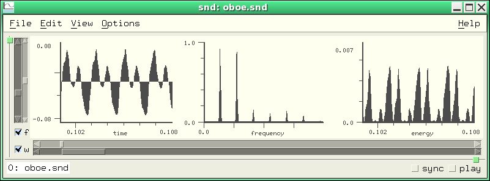

Snd is a highly customizable, extensible program. The syntax used is Scheme (a form of lisp) as implemented by the Gnu Guile library. I've tried to bring out to lisp nearly every portion of Snd, both the signal-processing functions, and much of the user interface. You can, for example, add your own menu choices, editing operations, or graphing alternatives. Nearly everything in Snd can be set in an initialization file, loaded at any time from a file of scheme code or a saved state file, specified via inter-process communication or from stdin from any other program (CLM and Emacs in particular), imbedded in a keyboard macro, or accessed in the lisp listener. The easiest way to get acquainted with this aspect of Snd is to open the listener (via the View:Open listener menu option), and type experiments in its window. Its prompt is ">". So, say we've opened the listener, and (my typing is in this font and Snd's responses are in this font).
>(+ 1 2) 3
If the listener is active, and some sound is selected, any characters typed while in the sound graph which it can't handle are passed to the listener; to exit the listener without using the mouse, type C-g. This is also the way to get back to the listener prompt if it appears to be hung; normally in this situation, it's actually waiting for a close paren.
Snd is organized as a list of sounds, each with a list of channels, each channel containing lists of edits, marks, mixes, etc. There are other objects such as colors, vcts (an optimization of vectors), and regions; the currently active region is called the selection. I originally presented all the various functions and variables in an enormous alphabetical list, but that finally became unmanageable. In the following sections, each of the basic entities is treated in a separate section with cross-references where needed. The index provides alphabetical entry.
There are many examples in examp.scm and snd-test.scm. In addition, various examples of and extensions to Snd can be found in:
| bell.scm | the fm-bell from CLM |
| bird.scm | various North-American birds (from bird.clm) |
| effects.scm | an Effects menu based on examp.scm |
| env.scm | various envelope functions from CLM |
| enved.scm | envelope editor in lisp graph section |
| fmv.scm | the fm-violin tied to real-time gtk graphics |
| glfft.scm | OpenGL for spectra (needs work) |
| goopsnd.scm | first look at Goops (Guile Object System) for Snd |
| index.scm | snd-help locators |
| loop.scm | some Common Lisp syntax in Scheme |
| marks.scm | functions related to marks |
| mix.scm | functions related to mixes and tracks |
| moog.scm | Moog filter (from CLM) |
| pqwvox.scm | phase-quadrature waveshaping (from CLM) |
| prc95.scm | Perry Cook's physical model examples (from CLM) |
| pvoc.scm | phase-vocoder examples |
| rgb.scm | color definitions |
| rubber.scm | rubber-sound |
| snd-gtk.scm | various Guile-Gtk examples |
| v.scm | fm-violin (from CLM) |
| ws.scm | with-sound implementation |
| zip.scm | the zipper (a cross-fader, sort of) (from CLM) |
Snd's overall appearance is controlled first by the startup switches that choose the outermost widget; normally this is a paned window with a sound in each pane; -separate puts each sound in a separate window, and -notebook puts each sound on a separate page of a notebook widget. Similarly -horizontal and -vertical determine which way the outer panes are layed out. As panes (sounds) come and go, Snd's overall size may change (this is partly determined by the window manager, but is to some extent also up to Snd); many people find this distracting -- they would rather the overall window size try to stay the same. The Snd variable associated with this is "auto-resize"; it can be accessed as follows (we're typing to the listener here, as described above):
>(auto-resize) #t >(set! (auto-resize) #f) #f
As this illustrates,
variables in Snd are accessed as though each were a function, and set using set!. auto-resize's current
value is accessed above via (auto-resize), and set to a
new value via (set! (auto-resize) #f). #t is Scheme for "true"
(often 1 in C, t in Lisp), #f is "false" (0 in C, nil in Lisp).
A statement like (set! (auto-resize) #f) can be placed in your ~/.snd initialization file
to make it the default setting for your version of Snd, or placed
in a separate file of Scheme code and loaded at any time via the load
function.
In the sections below, the variable or function name is followed by either its default value or the function arguments, then some brief description of what it does. So,
basic-color ivory2 main Snd color.
means there's a thing called basic-color (and a way to set it via "(set! (basic-color) ...)"), that its default value is ivory2 (see rgb.scm for a definition of this color), and that it is the main Snd color.
A color in Snd is an object with three fields representing the rgb (red green blue) settings as numbers between 0.0 and 1.0. A color object is created via make-color:
>(define blue (make-color 0 0 1))
This declares the Scheme variable "blue" and gives it the value of the color whose rgb components include only blue in full force. The X11 color names are defined in rgb.scm. Now, in Snd, the basic color is known as "basic-color" (another Scheme variable); we can set it:
>(set! (basic-color) blue)
The color variables are:
basic-color ivory2 main Snd color. cursor-color red cursor color. data-color black color of data in unselected graph. enved-waveform-color blue color of waveform displayed in envelope editor. filter-waveform-color blue color of control panel filter waveform. graph-color white background color of unselected graph. highlight-color ivory1 highlighting color. listener-color aliceblue background color of lisp listener. mark-color red color of mark indicator. mix-color dark gray color of mix waveforms. selected-mix-color light green color of selected mix waveform. position-color ivory3 position slider color pushed-button-color lightsteelblue1 color of pushed button. sash-color lightgreen color of paned window sashes. selected-data-color black color of data in currently selected graph. selected-graph-color white background color of currently selected graph. selection-color lightsteelblue1 color of selected portion of graph. text-focus-color white color of text field when it has focus. zoom-color ivory4 zoom slider color.
In addition, the various transforms can be displayed using colormaps. The following variables and functions control this:
color-cutoff 0.003 In spectra, sets the lowest data value that will be colored.
color-dialog () Fire up the Color dialog (to choose a colormap etc).
color-inverted #t The 'invert' button in the color dialog, negated (hunh?!).
color-scale 0.5 The darkness setting in the color dialog, divided by 100.
colormap 0 Colormap choice for various displays (see the Color Editor).
This should be an integer between -1 and 15. The maps (from 0 to 15) are:
gray, hsv, hot, cool, bone, copper, pink, jet, prism, autumn, winter,
spring, summer, colorcube, flag, and lines. -1 means black and white.
load-colormap (colors) use colors in colors (a vector) as current colormap.
This is still kludgey, but the following shows how to use it:
(load "rgb.scm")
(define hi (make-vector 512)) ;use 64 if not using big colormaps
(do ((i 0 (+ i 4))) ((>= i 512))
(vector-set! hi i red) (vector-set! hi (+ i 1) blue)
(vector-set! hi (+ i 2) green) (vector-set! hi (+ i 3) black))
(load-colormap hi)
The color object handlers are:
color? (obj) #t if obj is a color object (see make-color). color->list (obj) return list (r g b) of color components. make-color (r g b) return a color value using the red/green/blue values
(British spelling enthusiasts can use "colour" throughout Snd by building it with the CFLAG -DSTR_OR=\"our\").
Fonts in Snd are strings containing a description of the desired font. These can be the abbreviated forms such as "8x14" or a full X font name such as "-misc-fixed-bold-r-normal--*-140-*-*-c-*-iso8859-1". The font variables are:
axis-label-font used in axis labels axis-numbers-font used in axis tick numbers bold-button-font used by various buttons and labels button-font used by various buttons and labels help-text-font help dialog text font listener-font listener font tiny-font smallest font used
Most of Snd's behavior can be customized. For example, when a sound is saved, some people want to be warned if a pre-existing sound is about to be destroyed; others (Snd's author included) grumble "just do it". There are two ways this kind of situation is handled in Snd; variables and hooks. A hook is a list of "callbacks" invoked whenever the associated event happens. When Snd exits, for example, any functions found on the exit-hook list are evaluated; if any of them returns #t, Snd does not exit.
(define unsaved-edits?
(lambda (ind)
(and (< ind (max-sounds))
(or (and (sound? ind)
(> (car (edits ind)) 0)
(report-in-minibuffer "there are unsaved edits")
#t)
(unsaved-edits? (+ ind 1))))))
(add-hook! exit-hook (lambda () (unsaved-edits? 0)))
Now when Snd is told to exit, it checks exit-hook, runs unsaved-edits?, and if the latter returns #t, if prints a worried message in the minibuffer, and refuses to exit. Similar hooks customize actions such as closing a sound (close-hook), clicking a mark (mark-click-hook), pressing a key (key-press-hook), and so on. Slightly special are the hooks output-comment-hook and output-name-hook; these refer to the default file name and comment displayed when you save a sound via the "save" dialog.
The main variables affecting Snd's overall behavior are:
ask-before-overwrite #f (Save-as): ask before overwriting an existing file
auto-update #f should Snd update a file automatically.
audio-input-device sndlib-default-device Audio input device (for the recorder)
audio-output-device sndlib-default-device Audio output device (for the play button)
audio-state-file ".snd-mixer" Name of file in which current audio hardware settings are
saved (only works in OSS and SGI).
auto-resize #t should Snd window resize upon open/close (see AutoResize)
channel-style channels-separate
The default state of the 'unite' button in multi-channel files.
Other values are channels-combined and channels-superimposed.
corruption-time 60 Time (seconds) between background checks for changed file on
disk (see auto-update). If less than 0.0, background process
is turned off.
dac-folding #t channels folded upon dac output if not enough dac channels are
available.
dac-size 256 Audio output buffer size (not always meaningful).
data-clipped #f If #t, output values are clipped to fit the current sndlib sample
representation's notion of -1.0 to just less than 1.0. The default
causes wrap-around which makes the out-of-range values very obvious.
default-output-chans 1 The default number of channels when a new or temporary file is created,
or a save dialog is opened.
default-output-format 1 The default data format when a new or temporary file is created,
or a save dialog is opened. (1 = mus-bshort).
default-output-srate 22050 The default srate when a new or temporary file is created,
or a save dialog is opened.
default-output-type 0 The default header type when a new or temporary file is created,
or a save dialog is opened. (0 = mus-next).
eps-bottom-margin 0.0 bottom margin used in snd.eps (Print command) (PS units).
PostScript units are 1/72 of an inch (a "point" in printer jargon);
an inch is 2.54 cm:
(define (inches-to-ps inches) (* inches 72)
(define (cm-to-ps cm) (* cm (/ 72.0 2.54)))
In the resulting .eps file, you'll find a concat statement near the
top of the file; the first and fourth numbers are scale factors on
the entire graph, the fifth is the left margin, and the sixth is the
bottom margin.
eps-file "snd.eps" Name of the Postscript file produced by the File Print option.
See also the epsFile resource.
eps-left-margin 0.0 left margin used in snd.eps (Print command) (PS units).
filter-env-in-hz #f If #t, filter env x axis is in Hz, otherwise 0 to 1.0.
fit-data-on-open #f If #t, the initial time-domain display of a sound shows
its entire duration, with the Y-axis set to show its maxamp.
graph-cursor XC_crosshair (34) cursor displayed following mouse in graph
The X cursors are declared in /usr/X11R6/include/X11/cursorfont.h or some such file.
initial-x0 0.0 Initial time domain window left bound (seconds).
initial-x1 0.1 Same, but on the right.
initial-y0 -1.0 Initial window y axis minimum.
initial-y1 1.0 Same, but maximum.
minibuffer-history-length 8 Length of minibuffer M-p/M-n history. If set, sounds that are currently open
are not affected, only subsequently opened sounds.
movies #t If #t, the mix graphs are updated constantly as the
mouse drags the mix tag.
normalize-on-open #t When a new sound is added to the Snd window, the resultant
set of graphs can start to dangle off the bottom or end of the screen.
If normalize-on-open is #t, Snd tries to do something more reasonable.
prefix-arg 0 This is the keyboard C-u style argument (named current-prefix-arg in Emacs).
raw-chans 1 The "raw-" variables refer to sound data interpretation choices made
when a sound is opened that appears to be headerless.
raw-chans sets the default number of channels.
raw-format mus-bshort
The default data format in a headerless sound. Other possibilities
are given above, or you can use the Sndlib macros directly.
raw-srate 44100 The default headerless sound sampling rate.
save-dir nil Name of directory for saved-state files.
If nil, all saved-state is placed (as text) in the saved-state.scm
file. If you've edited a file, this can be unwieldy. By setting
save-dir, Snd instead places the necessary intermediate files in
save-dir, with the file names in the saved-state file. The assumption
here is that you won't mess with the save-dir files until you no
longer want to restart that version of Snd. (set! (save-dir) "/tmp").
save-state-on-exit #f If #t, Snd saves its current state in save-state-file.
save-state-file "saved-snd.scm" The default saved state file name.
selection-creates-region #t If #t, a region is created whenever a selection is made.
show-indices #f If #t, each sound's name is preceded by its index.
show-selection-transform #f If #t, display the transform of the current active selection, if any.
show-usage-stats #f If #t, show approximate memory and disk space usage of current edit trees.
sinc-width 10 Width (in samples) of the sampling rate conversion sinc interpolation.
The higher this number, the better the src low-pass filter, but the slower
src runs. If you use too low a setting, you can sometimes hear high
frequency "whistles" leaking through. To hear these on purpose, make
a sine wave at (say) 55 Hz, then (src-sound '(0 3 1 1)) with sinc-width at 4.
temp-dir nil Name of directory for temporary files. nil usually means "/var/tmp".
temp-filenames (data) return vector of temp file names (see external programs).
trap-segfault #t If #t, try to catch segfaults and continue anyway.
use-raw-defaults #f If #t, the "raw-" variables' values are used automatically
when a headerless file is encountered. If #f, Snd fires up the
raw file dialog to find out how to interpret the data.
use-sinc-interp #t If #t, use high quality src, rather linear interpolation.
This can significantly increase the computational burden on the
computer; if you're trying to play 8 channel 44Khz sounds on an older
machine, It may help to set use-sinc-interp to #f. In fact, if you're
running a machine in the 100 MHz range, even stereo 44.1kHz can be a
problem -- if the sound has clicks or seems horribly distorted when
the "speed" control is not at 1.0, try setting this variable to #f.
window-height 0 The current Snd window height in pixels.
window-width 0 The current Snd window width in pixels.
window-x -1 The current Snd window left side in pixels.
window-y -1 The current Snd window upper side in pixels (X numbering starts
at 0 at the top).
zoom-focus-style focus-active
This determines what a zoom action focuses (centers) on. See Zoom options.
When some user-interface action takes place, some code is called that responds to that action; these functions are sometimes called callbacks; in Guile the variable that holds a list of such callbacks is known as a hook. A hook provides a way to customize user-interface actions. It is either a list of functions or #f. The Guile function add-hook! adds a function to a hook's list, remove-hook! removes a function, and reset-hook! clears out the list. For example, the hook that is checked when you click the sound's name in the minibuffer is name-click-hook. We can cause that action to print "hi" in the listener by:
>(add-hook! name-click-hook (lambda (snd) (snd-print "hi") #t))
If there is more than one function attached to a hook, some of the hooks 'or' the functions together (marked or below); that is they run through the list of functions, and if any function returns #t, the hook immediately returns #t (ignoring the remaining functions), whereas in the other cases, the result returned by the hook is the result of the last function in the list. In the list below the arguments after the hook name refer to the functions invoked by the hook.
after-graph-hook (snd chn) called after a graph is updated or redisplayed.
after-open-hook (snd) called just before the new file's window is displayed.
This provides a way to set various sound-specific defaults.
For example, the following causes Snd to default to locally
sync'd channels (that is, each sound's channels are sync'd
together but are independent of any other sound), united channels,
and filled graphs:
(add-hook! after-open-hook
(lambda (snd)
(if (> (channels snd) 1)
(begin
(set! (sync) (1+ snd) snd) ; 0 = #f
(set! (uniting) channels-combined snd)))
(set! (graph-style) graph-filled)))
close-hook (snd) called each time a file is closed (before the close). (or)
If it returns #t, the file is not closed.
during-open-hook (fd name reason) called after file is opened, but before data has been read.
This provides an opportunity to set sndlib prescaling values:
(add-hook! during-open-hook
(lambda (fd name reason)
(if (= (mus-sound-header-type name) mus-raw)
(mus-file-set-prescaler fd 500.0))))
The prescaling affects only sound data made up of floats or doubles.
exit-hook () called upon exit. (or)
If it returns #t, Snd does not exit. This can be used to check
for unsaved edits, or to perform cleanup activities.
before-fft-hook (snd chn) called just before an FFT (or spectrum) is calculated. If it returns
an integer, it is used as the starting point of the fft. The following
somewhat brute-force code shows a way to have the fft reflect the position
of a moving mark:
(define fft-position #f)
(add-hook! before-fft-hook (lambda (snd chn) fft-position))
(add-hook! mark-drag-hook (lambda (id)
(set! fft-position (mark-sample id))
(update-fft)))
fft-hook (snd chn scaler) called just after an FFT (or spectrum) is calculated.
graph-hook (snd chn y0 y1) called each time a graph is updated or redisplayed.
If it returns #t, the display is not updated.
just-sounds-hook (filename) called on each file (after the sound file extension check) if the
just-sounds button is set. Return #f to filter out filename.
(add-hook! just-sounds-hook
(lambda (name) ;display only stereo files in file selection dialog
(and (not (= (mus-sound-header-type name) mus-raw)) ;any unrecognized file is considered "raw"
(= (mus-sound-chans name) 2))))
This currently only works in Motif; the Gtk file selection dialogs
don't provide a way to specialize the directory read.
key-press-hook (snd chn key state) called upon key press while mouse is in lisp graph. (or)
If it returns #t, the key press is not passed to the main handler.
state refers to the control, meta, and shift keys.
mark-click-hook (id) called when a mark is clicked, return #t to squelch message.
(add-hook! mark-click-hook
(lambda (n)
(help-dialog "Mark Help" (number->string (mark-sample n)))
#t))
mark-drag-hook (id) called when mark id is dragged.
(define (report-mark-location id)
;; print current mark location in minibuffer
(let ((samp (mark-sample id))
(sndchn (mark->sound id)))
(report-in-minibuffer (format #f "~D (~,3F) ~A[~D]"
samp (/ samp (srate (car sndchn)))
(short-file-name (car sndchn)) (cadr sndchn)))))
(add-hook! mark-drag-hook report-mark-location)
mix-amp-changed-hook (id) called when mix amp changes via mouse (id = mix id).
If #t, the actual remix is the hook's responsibility.
mix-position-changed-hook (id samps)called when mix moves via mouse (id = mix id,
samps = samps moved). (progn) If #t, the actual remix is the
hook's responsibility.
mix-speed-changed-hook (id) called when mix speed changes via mouse (id = mix id).
If #t, the actual remix is the hook's responsibility.
mouse-drag-hook (snd chn button state x y)
called upon mouse motion (with button pressed) within lisp graph.
mouse-press-hook (snd chn button state x y)
called upon mouse button press within lisp graph.
mouse-release-hook (snd chn button state x y)
called upon mouse button release within lisp graph.
multichannel-mix-hook (ids) called when a multichannel mix happens in a sync'd sound.
ids is a list of mix id numbers. See mix.scm for an example.
mus-error-hook (error-type error-message) called upon mus_error. (or)
If it returns #t, Snd ignores the error (it assumes you've handled it via the hook).
name-click-hook (snd) called when sound name clicked (or).
If it returns #t, the usual informative minibuffer babbling is squelched.
open-hook (filename) called each time a file is opened (before the actual open). (or)
If it returns #t, the file is not opened.
output-comment-hook (str) called in Save-As dialog, passed current sound's comment, if any.
If more than one hook function, results are concatenated.
If none, the current comment is used.
(add-hook! output-comment-hook
(lambda (str)
(string-append "written "
(strftime "%a %d-%b-%Y %H:%M %Z" (localtime (current-time))))))
output-name-hook () called in File New dialog
save-hook (snd name) called each time a file is about to be saved. (or)
If it returns #t, the file is not saved. name is #f unless
the file is being saved under a new name (as in sound-save-as).
start-hook (filename) called upon start-up. (or)
If it returns #t, snd exits immediately.
play-hook (samps) called each time a buffer (size: samps) is about to be
filled for the DAC (see enved.scm and marks.scm). (progn)
start-playing-hook (snd) called when a play request is triggered. (or)
If it returns #t, snd does not play.
stop-playing-channel-hook (snd chn) called when a sound finishes playing. (or)
stop-playing-hook (snd) called when a sound finishes playing. (or)
stop-playing-region-hook (n) called when a region finishes playing. (or)
snd-error-hook (error-message) called upon snd_error. (or)
If it returns #t, Snd flushes the error (it assumes you've
reported it via the hook).
(add-hook! snd-error-hook
(lambda (msg) (play "bong.snd") #f))
snd-warning-hook (warning-message) called upon snd_warning. (or)
If it returns #t, Snd flushes the warning (it assumes you've
reported it via the hook).
(define without-warnings
(lambda (thunk)
(define no-warning (lambda (msg) #t))
(add-hook! snd-warning-hook no-warning)
(thunk)
(remove-hook! snd-warning-hook no-warning)))
Channel-specific hooks:
edit-hook (snd chn)
undo-hook (snd chn)
These are functions that return the hooks in question associated with the specified channel.
edit-hook is called just before any attempt to edit the channel's data. If it returns #t,
the edit is aborted. So,
(add-hook! (edit-hook) (lambda () #t))
aborts any attempt to edit the data; this is even more restrictive than setting the read-only
flag because the latter only refuses to overwrite the current data. undo-hook is called
just after any undo, redo, or revert that affects the channel. You can use edit-hook to set
up protected portions of the edit history:
(define protect
"(protect &optional snd chn) disallows any edits before the current one"
(lambda args
(let* ((edit-pos (apply edit-position args))
(hook (apply edit-hook args)))
(reset-hook! hook)
(add-hook! hook
(lambda ()
(let ((val (< (apply edit-position args) edit-pos)))
(if val (report-in-minibuffer "protected"))
val))))))
(define unprotect
"(unprotect &optional snd chn) allows edits at any edit history position"
(lambda args (reset-hook! (apply edit-hook args))))
enved.scm uses several of these hooks to implement an envelope editor in lisp. See also menu-hook below.
Snd presents its various data structures to the user as a list of sounds, each with a list of channels, each with lists of edits, marks, and mixes. The sound data itself is accessed through a variety of structure and functions, each aimed at a particular kind of use. One of the most commonly used is the vct. But before launching into vcts, I need to explain a few things about the following documentation.
In the following lists, optional arguments are in italics (although netscape sometimes displays them in bold face for some reason). Each sound has an associated "index" used to refer to it in all the functions. This somewhat arbitrary number is more or less related to the sound's position in the display of sounds (set the variable show-indices to cause it to be displayed in front of the sound's name). In the argument lists below, snd as an argument refers to the sound's index, and defaults to the currently selected sound. Similarly, chn is the channel number, starting from 0, and defaults to the currently selected channel. So if there's only one sound active, and it has only one channel, (cursor) (cursor 0), and (cursor 0 0) all refer to the same thing. If you want to refer to the currently selected sound, either use #f as the sound index or the function selected-sound.
If the snd argument is a list, the first element of the list is taken to be a mix id number, and the reference is to the underlying mix input sound data. That is, (frames 1) returns the number of frames (samples per channel) in the sound whose current index is 1; (frames (list 1)) returns the frames in the sound that underlies the mix whose id is 1. Similarly (scale-by .5) scales the currently selected sound by .5; (scale-by .5 (list 0) 2) scales the 3rd channel of mix 0's input sound by .5. I keep saying "underlying" because normally a mix is viewed after it has gone through its panel of controls (the set of widgets displayed in the Mix Panel dialog -- these can affect the amplitude, amplitude envelope, and sampling rate) -- next-mix-sample, for example, refers to the processed form of the mix data, whereas next-sample would refer to the original form. I may extend this to accept a list of (more than one) mixes.
In many cases, the snd, chn, and reg arguments
can be #t (for backwards compatibility, a few of them default to #t).
#t means "all" in this case; if snd is #t, all sounds are included,
so, for example, (expand #t) returns a list of the current
control panel expansion settings of all sounds, and
(set! (ffting #t #t) #t)
turns on the fft display in all channels of all sounds.
When an error occurs, in most cases the function throws a tag such as 'no-such-sound, 'impossible-bounds, 'no-active-selection, etc. The error tag is mentioned with the function in the form [no-such-channel]. All the functions that take sound and channel args ("snd chn" below) can return the errors 'no-such-sound and 'no-such-channel; all the mix-related functions can return 'no-such-mix; all the region-related functions can return 'no-such-region; to reduce clutter, I'll omit mention of these below.
Many of the Snd and CLM functions handle vectors (arrays) of data; by defining a new vector type, named vct, and providing a package of old-style array-processing calls upon that type, we can speed up many operations by a factor of 30. This is enough of a difference to warrant the added complexity, I think. A vct object can be viewed as a vector; to make one, call make-vct. It will be freed by the Guile garbage collector when it can't be referenced any further. To get an element of a vct, use vct-ref; similarly vct-set! sets an element (the "!" appended to the setter functions is standard in Scheme; another is the use of "?" where Common Lisp is more likely to use "-p"). Once created, a vct object can be passed to a variety of built-in functions:
(define hi (make-vct 100)) (vct-fill! hi 3.14) (vct-scale! hi -1.0)
Now our vct object hi has 100 -3.14's.
list->vct (lst) return vct object with elements of list lst make-vct (len) create vct struct of size len. sound-data->vct (sdobj chan vobj) place sound-data channel data in vct vct? (vobj) #t if vobj is a vct struct. vct-add! (vobj1 vobj2 off) vobj1[i+off] += vobj2[i], returns vobj1. vct-copy (obj) return a copy of obj. vct-do! (vobj proc) vobj[i] = (funcall proc i). vct-fill! (vobj val) vobj[i] = val, returns vobj. vct-length (vobj) length of data array in vobj. vct-map! (vobj proc) vobj[i] = (funcall proc). vct-move! (vobj new old) v[new++] = v[old++], returns v vct-multiply! (vobj1 vobj2) vobj1[i] *= vobj2[i], returns vobj1. vct-offset! (vobj val) vobj[i] += val, returns vobj. vct-peak (vobj) abs max val in vobj vct-ref (vobj pos) value in vobj's data at location pos. vct-scale! (vobj scl) vobj[i] *= scl, returns vobj. vct-set! (vobj pos val) set vobj's data at location pos to val (same as (set! (vct-ref ...) val)). vct-subtract! (vobj1 vobj2) vobj1[i] -= vobj2[i], returns vobj1. vct->list (v1) return list with elements of vct v1 vct->samples (samp samps data snd chn) synonym for set-samples. vct->sound-data (vobj sdobj chan) place vct data in sound-data vct->sound-file (fd vobj vals) write vals floats from vobj to fd. vcts-do! (vobj... proc) vobj[vi][i] = (nth vi (funcall proc num i)). vcts-map! (vobj... proc) vobj[vi][i] = (nth vi (funcall proc num)). vector->vct (vect) return vct object with elements of vector vect
Many of the functions described below can take a vct object as an argument; there are also several functions that create and fill vcts with data:
region-samples->vct (samp samps reg chn v) samples->vct (samp samps snd chn v pos) transform-samples->vct (snd chn v)
There are four slightly unusual functions in this family: vct-map!, vct-do!, vcts-map!, and vcts-do!. These are essentially providing a do-loop over one or more vcts, calling some Scheme function to get the values to assign into the vct(s). For example
(vct-map! out-data (lambda ()
(convolve cnv (lambda (dir)
(next-sample sf)))))
in the cnvtest function in examp.scm is calling the convolve generator and assigning the result to each successive member of the out-data vct. vct-do! is the same as vct-map! except that the called function should take one argument, the current loop index. Similarly, vcts-map! and vcts-do! take any number of vcts, followed by a trailing function, and map the function's results (assumed to be a list that matches the current number of vcts) into the vct array. In the map! case, the function takes one argument, the current number of vcts awaiting values; in the do! case, it takes two arguments, the vct number and the current loop index. For example, we could rewrite the cnvtest function to take stereo sounds:
(define cnvtest
(lambda (snd0 snd1 amp0 amp1)
(if (and (= (channels snd0) 2)
(= (channels snd1) 2))
(let* ((flt-len (frames snd0))
(total-len (+ flt-len (frames snd1)))
(cnv10 (make-convolve :filter (samples->vct 0 flt-len snd0 0)))
(cnv11 (make-convolve :filter (samples->vct 0 flt-len snd0 1)))
(sf10 (make-sample-reader 0 snd1 0))
(sf11 (make-sample-reader 0 snd1 1))
(out-data10 (make-vct total-len))
(out-data11 (make-vct total-len)))
(vcts-map! out-data10 out-data11
(lambda (num)
(list
(convolve cnv10 (lambda (dir) (next-sample sf10)))
(convolve cnv11 (lambda (dir) (next-sample sf11))))))
(free-sample-reader sf10)
(free-sample-reader sf11)
(vct-scale! out-data10 amp0)
(vct-scale! out-data11 amp1)
(vct->samples 0 total-len out-data10 snd1 0)
(vct->samples 0 total-len out-data11 snd1 1))
(snd-print "oops -- need stereo input"))))
We can use vcts to write new sound files:
open-sound-file (name chans srate comment) ; returns fd vct->sound-file (fd vct vals) ; writes vals floats to fd close-sound-file (fd vals)
After opening the file, loop through the data calling samples->vct, deal with the vct data as desired, write the samples to the file via vct->sound-file, then when finished, close-sound-file. If the new data is to replace the old, call (set! (samples...) data) with the new sound file's name; otherwise call insert-samples.
If you have Guile 1.4.1 or later, it's possible to access a vct object's elements with the syntax (obj index), equivalent to (vct-ref obj index). This is using a feature called "applicable smobs" in Guile; I may extend it to handle vct-set! and perhaps others: sound-data objects, the various sample readers (returning the current sample?), and so on. The clm generators can now use this syntax:
>(define hi (make-oscil 440.0)) #<unspecified> >(hi) 0.0 >(oscil hi) 0.125050634145737
It's no accident that the generator's type (i.e. oscil or whatever) is hidden here. For example, we can make a generator that is either an oscil or a sawtooth-wave:
>(define sine-or-sawtooth
(lambda (sine)
(let ((gen ((if sine make-oscil make-sawtooth-wave) 440.0)))
(lambda (fm)
(gen fm)))))
#<unspecified>
>(define osc (sine-or-sawtooth #t))
#<unspecified>
>(osc 0.0)
0.0
>(osc 0.0)
0.125050634145737
Another sound data object is the sound-data array used in Sndlib.
make-sound-data (chans, frames) return a sound-data object with chans arrays, each of length frames sound-data-ref (obj chan frame) return (as a float) the sample in channel chan at location frame sound-data-set! (obj chan frame val) set obj's sample at frame in chan to (the float) val sound-data? (obj) #t if obj is of type sound-data sound-data-length (obj) length of each channel of data in obj sound-data-chans (obj) number of channels of data in obj sound-data->vct (sdobj chan vobj) place sound-data channel data in vct vct->sound-data (vobj sdobj chan) place vct data in sound-data
In fact, all of the underlying sound library (Sndlib) functions are available, as well as all of (CLM). The most important Sndlib functions for Snd are:
mus-audio-close (line) close audio port line
mus-audio-describe () describe audio hardware state (in help window)
mus-audio-error () returns error code indicated by preceding audio call
mus-audio-error-name (err) string decription of error code
mus-audio-open-input (device srate chans format bufsize)
open audio port device ready for input
mus-audio-open-output(device srate chans format bufsize)
open audio port device ready for output
mus-audio-outputs (speakers headphones line-out) (Sun only) set active outputs
mus-audio-read (line sdata frames) read frames of data into sound-data object sdata from port line
mus-audio-write (line sdata frames) write frames of data from sound-data object sdata to port line
mus-sound-close-input(fd) close sound file
mus-sound-close-output(fd bytes) close sound file and update its length indication, if any
mus-sound-comment (filename) header comment, if any
mus-data-format-name (format) e.g. "16-bit big endian linear"
mus-header-type-name (type) e.g. "AIFF"
mus-sound-data-format(filename) data format (e.g. mus-bshort)
mus-sound-data-location(filename) location of first sample (bytes)
mus-sound-duration (filename) duration of sound in seconds
mus-sound-frames (filename) frames of sound according to header (can be incorrect)
mus-sound-chans (filename) number of channels (samples are interleaved)
mus-sound-header-type(filename) header type (e.g. mus-aifc)
mus-sound-length (filename) true file length (bytes)
mus-sound-max-amp (filename) returns a vector of max amps and locations thereof
mus-sound-open-input (filename) open filename (a sound file) returning an integer ("fd" below)
mus-sound-open-output(filename srate chans data-format header-type comment)
create a new sound file with the indicated attributes, return "fd"
mus-sound-read (fd beg end chans sdata)
read data from sound file fd loading the data array from beg
to end. sdata is a sound-data object that should be able to
accommodate the read
mus-sound-reopen-output
(filename chans data-format header-type data-location)
reopen (without disturbing) filename, ready to be written
mus-sound-samples (filename) samples of sound according to header (can be incorrect)
mus-sound-seek (fd offset origin) complicated -- see mus_sound_seek above
mus-sound-seek-frame (fd frame) move to frame in sound file fd
mus-sound-srate (filename) sampling rate
set-oss-buffers (num size) in Linux (OSS) sets the number and size of the OSS "fragments"
mus-sound-loop-info (filename) loop info (for an example, see examp.scm mark-loops)
set-sound-loop-info (start0 end0 start1 end1 snd)
set loop points in header -- start0 refers to the "sustain" loop,
start1 to the "release".
mus-sound-write (fd beg end chans sdata)
write data to sound file fd
See Sndlib for more information on these functions.
The simplest data access function is sample, returning the sample at a given position in a sound's channel. This simplicity, however, comes at a price in computation: if the desired sample is not in Snd's in-core (already loaded) view of the data, it has to access the sample, which can sometimes involve opening, reading, and closing a sound file. The result is that in some cases, sample will bring your function to a grinding halt. There are two alternatives, leaving aside the scanning and mapping functions mentioned below. One involves keeping the buffer of data around explicitly (samples->vct), and the other involves the use of a special object known as a sample-reader. The former is better if you're jumping around in the data, the latter if you're treating it generally as a stream of samples, read in order. The expsrc function below shows how to use samples->vct; there are numerous examples of sample-readers in examp.scm. The basic idea is that you create a reader (via make-sample-reader or make-region-sample-reader) giving it the start position, the sound and channel to read, and the initial read direction, then get data via next-sample and previous-sample, finally closing the reader with free-sample-reader. It is not strictly necessary to call free-sample-reader yourself; the garbage collector will handle this if necessary. A standard way to add something to the current data is:
... (sf (make-sample-reader start)) ... (vct-map! out-data (lambda () (+ (next-sample sf) <new stuff>)) (free-sample-reader sf) (vct->samples start len out-data)
This is largely equivalent to the clm call
(outa (+ start i) <new-stuff>)
but is applied as an edit to the current state in Snd. In general, slow things in Guile are vector references, floating point operations, and any do loop executed on a per-sample basis. In most cases, these can be collected into vct operations or through the use of functions like formant-bank.
There is a similar set of functions giving access to the mix data. make-mix-sample-reader returns a mix reader for the desired mix, mix-sample-reader? returns #t if its argument in a mix sample reader, next-mix-sample returns the next sample (before it is mixed into the output), and free-mix-sample-reader releases a reader. Mixes can be collected into tracks, so there are also make-track-sample-reader, track-sample-reader?, next-track-sample, and free-track-sample-reader. As mentioned above, the mix-sample-reader refers to the mix data after it has been processed through its control panel. The original (possibly edited) sound can be accessed by a normal sample-reader.
free-mix-sample-reader(obj) release mix-sample-reader obj.
free-sample-reader(obj) release sample-reader obj.
free-track-sample-reader(obj) release track-sample-reader obj.
make-mix-sample-reader(mix) create a mix-sample-reader object reading mix
mix-sample-reader?(obj) #t if obj is a mix-sample-reader.
make-region-sample-reader(start reg chn dir)
create a sample-reader object reading region reg's channel chn
make-sample-reader(start snd chn dir pos)
create a sample-reader object reading snd's channel chn
starting at sample start with initial read direction dir
(1=forward, -1=backward). pos is the edit history position to read
(defaults to current position). One use of pos is to get the difference
between two edits:
(define snd-diff
(lambda () ;assume mono, get diff between current state and previous
(let* ((index (selected-sound))
(edit-pos (edit-position index))
(previous-edit (make-sample-reader 0 0 index 1 (1- edit-pos))))
(lambda (x)
(- x (next-sample previous-edit)) #f))))
(map-chan (snd-diff))
snd can also be a filename (a string); in this way a sample-reader
can read external sounds without going to the trouble of loading them into Snd.
(define reader (make-sample-reader 100 "oboe.snd"))
make-track-sample-reader(track samp snd chn)
create a track-sample-reader object reading track
next-mix-sample (obj) return next sample read by mix-sample-reader obj.
next-sample (obj) return next sample read by sample-reader obj.
next-track-sample (obj) return next sample read by track-sample-reader obj.
previous-sample (obj) return previous sample in stream read by sample-reader obj.
sample-reader-at-end? (obj) #t if sample-reader obj is at EOF.
sample-reader? (obj) #t if obj is a sample-reader.
track-sample-reader?(obj) #t if obj is a track-sample-reader.
A mark is an object that refers to a particular sample. Each mark has an associated sample number (mark-sample), name (mark-name), sync value (mark-sync), and a globally unique id number (returned by find-mark or add-mark, for example).
add-mark (sample snd chn) add mark at sample, returning mark id.
backward-mark (count snd chn) move back count marks (C-j).
delete-mark (id) delete mark id (- C-m).
delete-marks (snd chn) delete all marks in snd's channel chn
find-mark (samp snd chn) return identifier of mark at sample samp or #f if none found.
This identifier is used in calls such as mark-sample. Since marks
can move around during editing, a unique 'tag' is needed to refer to a
particular mark. samp can also be a string; in this case find-mark
looks for a mark of that name.
forward-mark (count snd chn) move forward count marks (C-j).
mark-click-hook(id) called when a mark is clicked, return #t to squelch message.
mark-color red color of mark indicator.
mark-name (id) name of mark id; also (set! (mark-name id) name).
mark-sample (id pos) position of mark id at edit history position pos; also (set! (mark-sample id) samp)
mark-sync (id) mark id's sync value; also (set! (mark-sync id) sync).
mark-sync-max () max mark sync value seen so far.
mark->sound (id) sound and channel that hold mark id.
marks (snd chn pos) list of mark ids in snd's channel chn at edit history position pos.
If chn and pos are omitted, a list of lists is returned,
each inner list representing a channel of snd. If snd is
also omitted, a list of lists of lists is returned, representing
each sound and its channels.
mark? (id) #t if mark id is active.
save-marks (snd) save snd's marks, writing a file <name>.marks (returns file name).
show-marks #t If #t, marks are displayed. This is the 'Show marks' View menu option.
syncd-marks (sync) list of marks (ids) that share sync.
The sync value is very similar to the mix track number or the sound sync field; it provides a way to group marks for simultaneous changes. Marks that share the same sync value (if not 0), move together when any one of them is dragged, play together, etc. mark->sound provides a way to go from a mark id to the sound and channel that hold that mark; the inverse function is marks. To find which marks share a given sync value, use syncd-marks; to find an unused sync value use mark-sync-max.
(define (move-syncd-marks sync diff)
(map (lambda (m)
(set! (mark-sample m) (+ (mark-sample m) diff)))
(syncd-marks sync)))
marks without any argument, or with just a sound index returns a list of lists; each inner list is the list of current marks (ids) active in that channel, ordered by sample number. If the channel argument is specified, marks returns just the list of mark ids. If the edit history position is given, the list of ids reflects the mark list at that time in the edit history. So, for example, the following procedure returns a list describing the history of a mark over the course of editing a channel, each list entry being the mark sample at that time or #f if the mark was not active:
(define (describe-mark id)
(let ((mark-home (mark->sound id)))
(if (eq? mark-home 'no-such-mark)
;; not an active mark, so go scrounging for it
;; we're looking at every edit of every channel
(do ((i 0 (1+ i)))
((or (= i (max-sounds)) (list? mark-home)))
(if (sound? i)
(do ((j 0 (1+ j)))
((or (= j (channels i)) (list? mark-home)))
(let* ((max-edits (apply + (edits i j))))
(do ((k 0 (1+ k)))
((or (> k max-edits) (list? mark-home)))
(if (member id (marks i j k))
(set! mark-home (list i j)))))))))
(if (list? mark-home)
(let* ((snd (car mark-home))
(chn (cadr mark-home))
(max-edits (apply + (edits snd chn)))
(descr '())
(header (list 'mark id 'sound snd (short-file-name snd) 'channel chn)))
(do ((i max-edits (1- i)))
((< i 0) descr)
(if (member id (marks snd chn i))
(set! descr (cons (mark-sample id i) descr))
(set! descr (cons #f descr))))
(cons header descr))
'cant-find-mark)))
Marks that are syncd together can be used for insertions, and deletions, and can set arbitrary groups of play points. But it's a bit tedious to type (set! (mark-sync ...)...) for each of the marks you want in the group. The following uses the mark-clicked-hook instead; you type (start-sync), then click the set of marks to sync, then (stop-sync).
(define mark-sync-number 0) (define (start-sync) (set! mark-sync-number (+ (mark-sync-max) 1))) (define (stop-sync) (set! mark-sync-number 0)) (define (click-to-sync id) (set! (mark-sync id) mark-sync-number) #f) (add-hook! mark-click-hook click-to-sync)
Now control-click and drag one of them, and all move together deleting data, or inserting zeros; or click the "play" triangle, and all play together starting from the respective marks (which need not be in separate channels). See marks.scm for more examples.
A mix is an object that controls one channel of a sound mix; it normally includes a control panel that affects various aspects of the mix. In addition, all the signal-processing functions can be applied to the mix data. These variables affect all mixes:
mix-color dark gray color of mix waveforms.
The set form (set! (mix-color) ...) has an optional second argument; if you
want to set just a particular mix's color, give the id of the mix
here. That is, (set! (mix-color) red) sets all unselected mixes to
red; but (set! (mix-color 3) red) sets only mix #3 to be red. Similarly,
mix-color has an optional argument that can specify which mix's color
we want.
selected-mix-color light green color of selected mix waveform.
mix-waveform-height 20 Max height (pixels) of mix waveforms (see show-mix-waveforms).
with-mix-tags #t If #f, don't make mixes editable.
Each mix object has a unique identifier used in the next set of functions to access a particular mix object:
backward-mix (count snd chn) move back count mix tags (C-x C-j). forward-mix (count snd chn) move forward count mix tags (C-x C-j). mixes (snd chn pos) list of currently active mixes in snd's channel chn at history pos. mix-amp (mix chan) amplitude of mix's channel chan. mix-amp-env (mix chan) amplitude envelope of mix's channel chan. mix-anchor (mix) anchor position (within the mix) of mix. mix-chans (mix) chans in mix. mix-length (mix) length in samples of mix. mix-locked (mix) #t if mix is locked. mix-name (mix) mix's name. mix-position (mix) position (sample number) of mix. mix-sound-channel (mix) channel affected by mix. mix-sound-index (mix) index of sound affected by mix. mix-speed (mix) speed of mix. mix-tag-width (mix) tag width in graph of mix (default 6) mix-tag-height (mix) tag height in graph of mix (default 14) mix-tag-y (mix) tag y offset in graph of mix (default 0) mix-track (mix) mix track (0 = none). (mix-sync is a synonym for this). mix? (mix) #t if mix is active. play-mix (mix) play mix mix. play-track (track snd chn) play track track. If snd is #t, play all associated chans. selected-mix () selected mix (-1 = none) -- set to select mix. show-mix-waveforms
As an example, say we have a mix active whose "id" is 123.
>(mix-chans 123) 1 >(set! (mix-amp 123 0) .5) .5
This sets mix 123's channel 0 amplitude scaler to .5. To mix data in such a way as to create an associated mix object:
mix (file samp in_chan snd chn with-mix-tags)
mix file's channel in_chan starting at samp in snd's channel chn.
if only the file argument is given, this is equivalent to the File menu's
Mix option; the mix start sample in this case depends on the cursor location.
mix returns the id of the first channel's mix (subsequent channels simply
increment this number). id of -1 means some error occurred.
If with-mix-tags is #f (default is #t), the data is simply
mixed without creating any mix tags [no-such-file].
mix-region (samp reg snd chn)
Mix in region reg at sample samp (defaulting to the cursor sample),
in snd's channel chn. mix-region returns the id of the first channel's
mix (subsequent channels simply increment this number).
[no-such-region]
mix-sound (file start) mix file into selected sound at start [no-such-file].
mix-vct (vct beg snd chn with-mix-tags origin)
mix the contents of vct into snd's channel chn starting at frame beg.
Returns the id of the new mix, or -1 if some error occurred.
If with-mix-tags is #f (default is #t), the data is simply
mixed without creating any mix tags.
In the functions that refer to a given sound, the form (list mix-id) refers to the underlying mix's sound. So, for example, (src-sound 2.0 1.0 (list 0) 0) performs sampling-rate conversion on mix 0's sound's channel 0; (display-edits (list 0) 0) shows the edit list of that sound, and (set! (edit-position (list 0) 0) 0) reverts it to its original state.
A region is a saved portion of sound data. There is a dialog to browse regions, and a notion of a stack of regions. As regions are added, old ones get pushed off the stack and deleted. The current selection is usually based on region 0, although in fact there's no necessary connection between them. The region number (e.g. 0) refers to its position in the region stack; each region also has a unique identifier called its id. Some of the reg arguments can be #t, referring to all current regions; these are indicated as reg below.
delete-region (reg) delete region number reg (which defaults to 0). This removes the
region from the region stack; it doesn't edit the corresponding file(s).
id-region (id) map from region-id id to its current region stack location.
insert-region (beg reg snd chn) insert region reg at sample beg in snd's channel chn.
make-region (beg end snd chn)
create a new region spanning samples beg to end in snd's channel chn.
returns region's id. If no arguments are given, the
current selection is used.
make-region-sample-reader(start reg chn dir)
create a sample-reader object reading region reg's channel chn
max-regions 16 Size of region stack.
play-region (reg wait) play region reg, if wait is #t, play to end before returning.
protect-region (reg protect) protect/unprotect region reg from deletion in the region browser.
region-chans (reg) number of channels in region reg.
region-id (reg) unique identifier attached to region reg.
region-length (reg) number of samples (per channel) in region reg.
region-maxamp (reg) maximum amplitude of region reg.
region-sample (samp reg chn) value of sample samp in region reg in channel chn.
region-samples (samp samps reg chn)
return vector of samps samples starting at samp in region reg's
channel chn.
region-samples->vct (samp samps reg chn v)
return vct struct of samps samples starting at samp in region reg's
channel chn. If v (a vct object) is provided, it is filled,
rather than creating a new vct object.
region-srate (reg) original (nominal) sampling rate of region reg.
regions () list of ids of regions currently active.
region? (reg) #t if region reg has data.
save-region (reg filename format)
save region reg in filename in data format format (default mus-bshort)
[cannot-save].
select-all (snd chn) create a new region spanning all samples in snd's channel chn.
returns region's id.
select-region (reg) select region reg (i.e make it region 0).
These are specific to the current selection (these can return the error 'no-active-selection):
convolve-selection-with (file amp)
convolve the current selection with file
cut () cut the current selection (a no-op if no active selection)
delete-selection () same as cut (deletes currently selected portions).
env-selection (envelope env-base snd chn)
apply envelope to the currently selected portion of snd's channel chn.
envelope can also be a CLM env generator (in this case, env-base
is ignored).
filter-selection (env order) apply an FIR filter of order order and frequency response env
to the current selection. env can be the filter coefficients
themselves in a vct object with at least order elements, or
a CLM filtering generator (see filter-sound).
insert-selection (beg snd chn) insert (paste) selection starting at beg in snd's channel chn.
mix-selection (beg snd chn) mix (add) selection starting at beg in snd's channel chn. Returns new mix id.
play-selection (wait) play the currently selected data
reverse-selection () reverse data delineated by current selection
save-selection (file header-type data-format srate comment)
save the currently selected data in file
scale-selection-by(scalers) scale the current selection by scalers which can be either a float,
or a vector of floats
scale-selection-to(scalers) normalize the current selection to scalers which can be either a float,
or a vector of floats
selection-length () selection frames
selection-member? (snd chn) #t if snd's chn is member of active selection.
selection-position () selection begin sample number (used to be called selection-beg).
selection-to-temp (type format) write out selected data as a temp file (see external programs)
selection-to-temps(type format) write out selected data as temp files (see external programs)
selection? () #t if selection is active.
smooth-selection () apply a smoothing function to the current selection
src-selection (num-or-env base)
same as src-sound but applied to current selection.
temp-to-selection (data name origin)
read selected data from temp file (see external programs).
temps-to-selection(data names origin)
read selected data from temp files (see external programs).
The selected portion can be set, independent of any region, by setting selection-position and selection-length.
Some of the snd and chan arguments can be #t, referring to all current sounds or all channels of a sound; of these, some default to the currently selected sound if no argument is given, whereas others (mainly for historical reasons) default to all sounds and channels; the former are indicated as snd or snd chn below, and the latter as snd or snd chn. Also, in most of the signal-processing functions, the snd argument can also be a list; in this case it refers to a mix. For example, the cursor function, which refers to the current cursor location, is listed here as:
cursor (snd chn) cursor location
which indicates that (cursor 0 0) returns the cursor location in sound 0, channel 0,
(cursor) returns the location in the currently selected sound, (cursor #t #t)
returns a list of lists of all the cursor locations, and (set! (cursor) 0) sets (just) the
cursor in the currently selected channel;
on the other hand, the fft-size function
is listed as:
fft-size (snd chn) FFT size.
which means that (fft-size 0 0) returns the fft size used in sound 0, channel 0,
(fft-size) returns the globally effective fft size, (fft-size #t #t)
returns a list of lists of all the fft sizes, and (set! (fft-size) 512) sets all
fft sizes to 512.
The variables are local to each sound or each channel.
That is, (amp snd) returns the control-panel amp setting, and (set! (amp snd) val)
sets its value to val.
add-player (player start end)
add player to the play-list (see make-player).
amp (snd) current amp (control panel slider) value.
It is possible to use these controls (in "real-time") in your own functions.
See amprt in examp.scm for a simple example, and snd-gtk.scm for a complicated one.
append-to-minibuffer (msg snd) append msg to whatever is in snd's minibuffer [no-such-sound].
backward-graph (count snd chn)
move back (up or left) count graphs (C-x C-o).
backward-sample (count snd chn)
move back count samples (C-b), return new cursor position.
bomb (snd on) display bomb icon in snd's minibuffer. Set on to #f to erase bomb.
call-apply (snd target) equivalent to pushing snd's 'apply' button (this is intended
for internal testing); target can be 0=sound, 1=channel, 2=selection.
call-apply can be used in conjunction with the various control panel variables:
(define expnd
(lambda (amt)
(set! (expanding) #t)
(set! (expand) amt)
(call-apply)))
channel-sync (snd chn) sync field local to channel (currently unused).
channels (snd) number of channels in snd.
chans (snd) same as channels (the forgetful programmer's friend).
close-sound (snd) close snd (same as File menu Close).
comment (snd) snd's comment, if any. If this is set, the new value may be appended
to the old (AIFC and RIFF headers are the only safe ones in this case).
contrast (snd) current contrast (control panel slider) value.
contrast-amp (snd) snd's contrast-amp (control panel variable).
contrasting (snd) #t if snd has contrast turned on (control panel)
convolve-with (file amp snd chn)
convolve snd's channel chn (or the currently sync'd data)
with the data in the sound file file. amp is the resultant
peak amplitude (leave amp unset, or set it to #f to get the
unnormalized result) [no-such-file].
Convolve-with in conjunction with mix can provide high-quality reverb:
(define conrev
(lambda (impulse amp)
(convolve-with impulse amp)
(save-sound-as "reverb.snd") ;let mix scalers set reverb amount
(revert-sound)
(mix "reverb.snd")))
cursor (snd chn) cursor location (samples) of channel chn of snd.
cursor-follows-play(snd) #t if cursor is following along in the sound as it plays.
cursor-style (snd chn) cursor style (cursor-cross or cursor-line)
The following hooks set the cursor-style to cursor-line while playing if
cursor-follows-play is #t:
(define set-sound-cursor
(lambda (snd shape)
(do ((j 0 (1+ j)))
((= j (channels snd)) #f)
(set! (cursor-style snd j) shape))))
(add-hook! start-playing-hook
(lambda (snd) (if (cursor-follows-play snd) (set-sound-cursor snd cursor-line))))
(add-hook! stop-playing-hook
(lambda (snd) (set-sound-cursor snd cursor-cross)))
data-format (snd) snd's data format (e.g. mus-bshort). If you encounter a file
with an unknown format, or a header that has the wrong format,
you can set this field forcing Snd to interpret the data in any
form you like. Similar remarks apply to the srate, data-location,
header-type, and channels fields.
data-location (snd) snd's data location (bytes).
delete-sample (samp snd chn) delete sample samp in snd's channel chn [no-such-sample].
delete-samples (samp samps snd chn)
delete samps samples starting at sample samp.
dot-size (snd chn) size in pixels of dots when graphing with dots (default: 1)
env-base (env) base of env.
env-sound (envelope samp samps env-base snd chn)
apply (in amplitude) envelope to snd's channel chn starting
at sample samp for samps samples with connecting segments
based on env-base. env-base defaults to 1.0 (line segments).
samp defaults to 0. samps defaults to the full duration.
envelope is a list or vector containing the breakpoint values
(as in CLM).
(env-sound '(0 0 1 1 2 0))
envelope can also be a CLM env generator (in this case, env-base
is ignored, and it's assumed samps is reflected in the make-env call).
expand (snd) current expansion amount (control panel).
expand-hop (snd) snd's expansion hop amount (seconds).
expand-length (snd) snd's expansion segment length (seconds).
expand-ramp (snd) snd's expansion ramp amount (between 0 and .5).
This affects the smoothness of the grain overlaps -- .001 gives a
rattling effect (see make-control-dialog in snd-gtk.scm).
expanding (snd) #t if snd's expand button is on.
fft-beta (snd chn) The fft data window parameter, if relevant.
fft-log-frequency (snd chn) spectrum frequency axis is logarithmic (#t) or linear (#f) (default #f).
fft-log-magnitude (snd chn) spectrum magnitude axis is in decibels (#t) or linear (#f) (default #f).
fft-size (snd chn) FFT size (default = 256).
fft-style (snd chn) choice of spectral display. The choices are (default) normal-fft,
sonogram, and spectrogram.
fft-window (snd chn) fft data window (default: blackman2-window)
rectangular-window hanning-window welch-window parzen-window
bartlett-window hamming-window blackman2-window blackman3-window
blackman4-window exponential-window riemann-window kaiser-window
cauchy-window poisson-window gaussian-window tukey-window
dolph-chebyshev-window (this only if GSL is loaded)
ffting (snd chn) #t if snd's channel chn is displaying a spectrum (the 'f' button).
file-name (snd) snd's complete file name.
filter-dBing (snd) snd's filter dB button state (control panel).
filter-env (snd) snd's filter envelope (control panel).
filter-order (snd) snd's filter order (control panel).
filter-sound (env order snd chn)
apply an FIR filter of order order and frequency response env
to snd's channel chn. env can be the filter coefficients
themselves, in a vct object with at least order elements
(see gmeteor). It can also be any CLM filtering generator
(e.g. comb, formant, one-pole, iir-filter, etc). The generator
is called in C, not Scheme, so this is the fastest way to apply
CLM filtering to a sound.
(filter-sound '(0 1 1 0) 1024) ;FIR filter given frequency response
(filter-sound (list->vct '(.1 .2 .3 .3 .2 .1)) 6) ;FIR filter given actual coefficients
(filter-sound (make-fir-filter 6 (list->vct '(.1 .2 .3 .3 .2 .1)))) ;CLM FIR filter (same as above)
(filter-sound (make-delay 120)) ;CLM delay (same as insert-silence)
(filter-sound (make-formant .99 1200)) ;CLM formant
filtering (snd) #t if snd is filtering (control panel filter button).
find-sound (filename) returns the index of filename (used as snd throughout).
returns #f if no sound is found that matches filename.
finish-progress-report (snd) see progress-report.
forward-graph (count snd chn)
move forward (down or right) count graphs (C-x C-o).
forward-sample (count snd chn)
move forward count samples (C-f), return new cursor position.
frames (snd chn) chn's current length in samples. Used with set!, this either truncates
the sound or pads it with zeros at the end.
graph (data xlabel x0 x1 y0 y1 snd chn)
Display a graph of data in a separate display per channel. The x axis
is labelled xlabel, the x axis units go from x0 to x1 (default 0 to 1.0),
the y axis goes from y0 to y1 (default fits the data), and the display is
associated with channel chn in snd.
(graph #(0 .1 .2 .3 .4 .3 .2 .1 0) "roof")
The current slider values can be read from x-position-slider,
x-zoom-slider, etc. The data argument can be a list of vectors or
vcts; each is graphed at the same time, following the sequence of
colors used when channels are superimposed. See examp.scm. If data
is a list of numbers, it is assumed to be an envelope (a list of breakpoints).
graph-style (snd chn) how sound data is displayed (default: graph-lines)
The choices are:
graph-lines graph-dots graph-filled graph-lollipops graph-dots-and-lines
It is possible to set the graph-style of each of a channel's graphs
independently. The lower 8 bits of the graph-style apply to the main
graph, and to the other graphs if they aren't set explicitly; the
second 8 bits refers to the fft graph offset by 1, and the next
8 bits are the lisp graph. This is clumsy, but backwards compatible.
For example,
(set! (graph-style 0 0) (+ graph-dots (ash (+ graph-lines 1) 8) (ash (+ graph-lollipops 1) 16)))
causes the main (time domain) graph to be displayed using dots,
the fft graph to use lines, and the lisp graph lollipops. There
are some functions in examp.scm (main-graph-style et al) that
might make these fields easier to access and change.
graphing (snd chn) #t if (lisp) graph data is being displayed.
graphs-horizontal (snd chn) determines whether channel graphs (time domain, spectrum, lisp graph)
are arranged vertically or horizontally.
header-type (snd) snd's header type (e.g. mus-aiff).
insert-silence (beg num snd chn) insert num zeros at beg in snd's channel chn.
insert-sound (file beg in_chan snd chn)
insert channel in_chan of file at sample beg in snd's channel chn.
beg defaults to the cursor position; if in_chan is not given, all
channels are inserted. [no-such-file].
insert-sample (samp value snd chn)
insert sample value at sample samp in snd's channel chn
[no-such-sample].
insert-samples (samp samps data snd chn)
insert samps samples of data starting at sample samp in snd's channel chn.
data can be a filename; Snd assumes any such file is temporary;
it will be deleted when no longer needed.
left-sample (snd chn) return the position in samples of the left edge of the time domain
waveform for snd's channel chn.
line-size (snd chn) Number of samples considered to be a 'line' (C-n and C-p commands).
default: 128.
loop-samples (reader function calls origin environ)
This calls external C functions while moving through the data accessed
by the sample reader. loop-samples takes a sample reader, a pointer to a
(C) float function that takes one float argument (the current sample),
the number of times to call that function, and a name for the editing
operation for the edit history list. If environ is included, it
is passed as the second (void *) argument to the function. See grfsnd.html
for examples of both forms.
make-player (snd chn) make a new player associated with snd's channel chn.
A player is a sort of wrapper for a channel of a sound that supports
all the control-panel functions. Once created, you can set these
fields, then call add-player to add this channel to the list of
channels either being played (if a play is in progress) or about
to be played. Once some player is in the play-list, you can start
the play with start-playing, and stop it prematurely with either
stop-player or stop-playing. These functions make it possible
to build custom control panels. Here's a simple example that plays a
sound with individual amplitudes for the channels:
(define play-with-amps
(lambda (sound . amps)
(let ((chans (chans sound)))
(do ((chan 0 (1+ chan)))
((= chan chans))
(let ((player (make-player sound chan)))
(set! (amp player) (list-ref amps chan))
(add-player player)))
(start-playing chans (srate sound)))))
(play-with-amps 0 1.0 0.5) ;plays channel 2 of stereo sound at half amplitude
See also make-amp-controls in sndgtk.scm, and play-syncd-marks in marks.scm.
map-across-all-chans (func start end edname)
apply func to all open channels in parallel (see Scanning Data).
map-across-chans (func start end edname)
apply func to currently syncd channels in parallel
map-across-sound-chans (func start end edname snd)
apply func to sound's channels in parallel
map-all-chans (func start end edname)
apply func to all open channels
map-chan (func start end edname snd chn)
apply func to samples in current channel
map-chans (func start end edname)
apply func to currently syncd channels
map-sound-chans (func start end edname snd)
apply func to current sound's channels
maxamp (snd chn) max amp of snd's channel chn. Used with set!, this is equivalent to scale-to.
max-fft-peaks (snd chn) max number of fft peaks reported (default: 100).
max-sounds () current size of sound array (grows as required).
memo-sound #f When a sound file is opened, Snd looks for a file with the same
name but with an appended ".scm" extension. If such a file is found,
it is loaded automatically. The variable memo-sound is set to
the newly opened sound's index. This supports the "snd-memo" feature
in CLM, but can be used independently of CLM to store marks, selections,
or whatever that you want associated with a particular sound. Confusingly
enough, this is a Scheme variable, unlike all the others -- that is, you
refer to it directly, not as a procedure call.
min-dB (snd chn) Sets the minimum dB value displayed in various graphs (default: -60.0).
new-sound (name header-type data-format srate chans comment)
create a new (empty) sound named name. If the type and other
arguments are not specified, a dialog is posted to get the needed
values which default to the current default-output-type and
related settings. Data formats are (b=big-endian, l=little, u=unsigned):
mus-bshort mus-lshort mus-mulaw mus-alaw mus-byte mus-ubyte mus-bfloat
mus-lfloat mus-bint mus-lint mus-b24int mus-l24int mus-bdouble mus-ldouble
mus-ubshort mus-ulshort
Header-types are:
mus-next mus-aifc mus-riff mus-nist mus-raw mus-ircam mus-aiff
normalize-fft (snd chn) FFT normalization choice (default: normalize-by-channel)
If normalize-by-channel (#t) or normalize-by-sound, spectral data is
normalized to 1.0 before display. If dont-normalize (#f), you get the
raw data values, which can reflect amplitude changes. Snd tries to
choose a y axis limit that makes successive displays move smoothly.
open-alternate-sound (name) close the currently selected file, if any, and open name.
Returns #f if it can't open name, otherwise the new index.
open-raw-sound (name chans srate format)
open name as a raw (no header) sound in the layout specified.
If the file has a header, it is not ignored (use (set! (data-format ...))
and friends if you want to ignore the header).
open-sound (name) open name as in File menu Open option.
peaks (file snd chn) display fft peak information. If file is not null, write
the information to that file, else post it in a help window
(where it can be selected and pasted elsewhere).
play (samp snd chn sync end)
play snd's channel chn starting from sample samp.
If 'sync' is #t, play all sounds syncd to snd. If 'end' is not given,
play until end of sound. If 'end' is given (as a sample number), the
actual end point may be off by a few samples; Snd only checks on
dac-buffer boundaries (normally around 256 samples). samp can
also be a filename (a string). In this case, snd can be the start
sample (default 0), and chn can be the end sample (default end-of-file).
[no-such-file, no-such-sound]
play-and-wait (samp snd chn sync end)
play snd's channel chn starting from sample samp and wait
for it to finish.
player? (obj) #t is obj is an active player.
progress-report (pct name current-channel channels snd)
The functions start-progress-report, progress-report, and
finish-progress-report handle the animated hour-glass icon used
to amuse the idle user while some long computation is in progress.
The pct argument is a float between 0.0 and 1.0 which indicates how
far along we are in the computation (there are actually only 20 separate
icons, so there's no point in calling this more often than that).
start-progress-report posts the initial icon, and finish-progress-report
removes it. If the icons are not available, a message is posted in
snd's minibuffer using name and so on to identify itself.
prompt-in-minibuffer (msg callback snd)
Post msg in snd's minibuffer, and when the user responds,
call callback with the result and the snd (the sound's index).
If callback is specified it should be either #f or a function of
two arguments [no-such-sound].
(prompt-in-minibuffer "sample 0 via func:"
(lambda (func snd)
(set! (sample 0) (func (sample 0)))))
;; here we're assuming the user will type a function in response to the prompt
;; the value returned by the function will be the new sample 0 value
;; the function should take one argument, the current sample 0 value
;; now if the user responds: (lambda (y) (+ y .5))
;; sample 0 will be set to itself + .5
See eval-over-selection in examp.scm for a more useful example.
read-only (snd) #t if snd is read-only, #f otherwise.
redo (edits snd chn) redo edits edits (default is 1) in snd's channel chn.
report-in-minibuffer (msg snd) post msg in snd's minibuffer [no-such-sound].
reset-control-panel (snd) clears the control panel.
restore-control-panel (snd) same as pushing the control panel 'r' button.
reverb-decay (snd) The length (seconds) of the reverberation after the sound has
finished (default: 1.0).
reverb-feedback (snd) snd's reverb feedback coefficient.
reverb-length (snd) reverb delay line length scaler (control panel).
reverb-lowpass (snd) reverb low pass filter coefficient.
reverb-scale (snd) reverb amount (control panel).
reverbing (snd) #t if snd's reverb button is on.
reverse-sound (snd chn) reverse data.
revert-sound (snd) revert snd to saved state (undo all edits).
right-sample (snd chn) position (samples) of right edge of time domain waveform.
sample (samp snd chn) value of sample samp in snd's channel chn.
If the desired sample happens to fall outside the current buffer
for the indicated channel, this function grinds to a halt -- if you're
running a loop through a bunch of samples, use the sample-readers
or samples->vct instead.
samples (samp samps snd chn pos)
return vector of samps samples starting at samp in snd's channel chn.
samp defaults to 0. samps defaults to frames - samp.
pos is the edit history position to read (defaults to current position).
samples->sound-data (samp samps snd chn v pos sdchan)
similar to samples->vct, but fill a sound-data object [no-such-edit].
samples->vct (samp samps snd chn v pos)
return vct struct with same data as in samples call above.
If v (a vct object) is provided, it is filled, rather than creating
a new vct object. pos is the edit history position to read.
save-control-panel(snd) same as pushing the control panel 's' button.
save-sound (snd) save snd; same as File menu's Save option.
save-sound-as (filename snd header-type data-format srate channel)
save snd as filename (same as File Save as option). If channel is specified,
only that channel is saved (extracted).
scale-by (scalers snd chn)
scale amplitude of snd by scalers. Unlike most of these functions,
scale-by follows the 'sync' buttons and affects all currently sync'd
channels. scalers can be either a float or a vector of floats.
In the latter case, the values are used one by one, applying each as
scale-by moves through the channels. If 'sync' is off, channel chn
is scaled (defaults to the currently selected channel). In addition, you
may notice a function named section-scale-by used in saved-state files.
This is essentially scale-by applied to a portion of one channel:
(section-scale-by scaler beg num snd chn).
scale-to (scalers snd chn)
(see scale-by) -- normalize snd to scalers.
scan-across-all-chans (func start end)
apply func to all open channels in parallel (see Scanning Data).
scan-across-chans (func start end)
apply func to currently syncd channels in parallel
scan-across-sound-chans (func start end snd)
apply func to sound's channels in parallel
scan-all-chans (func start end)
apply func to all open channels
scan-chan (func start end snd chn)
apply func to samples in current channel (see Scanning Data).
scan-chans (func start end)
apply func to currently syncd channels
scan-sound-chans (func start end snd)
apply func to current sound's channels
selected-channel (snd) selected channel in snd (set to select channel).
selected-sound () selected sound (index) (set to select sound).
set-contrast-func (func) set contrast function to func, a function of two arguments,
the current sample and the current 'contrast' slider setting,
returning a new sample, the result of the control panel contrast
function; func replaces the built-in contrast function.
Pass #f to return to the built-in version. Contrast-func returns
this function.
set-expand-funcs (expand make-expand free-expand)
This function replaces the built-in Snd (control panel) expand with your own.
See set-reverb-funcs below for an example. The three arguments are
the expand replacement, the function that makes or initializes any
state the new expand function will need, and the function to free that
state. Set these to #f to return to the built-in versions. The
make-expand function takes three arguments, the current sound index,
the current sampling-rate, and the initial expansion value (from the
control panel); it can return an SCM object that is subsequently
passed to the expand and free-expand functions. The expand function
takes 3 arguments, the thing returned by make-expand, the current
sample (a float), and the current expansion slider value; it should
return a float representing the new sample value. The corresponding
function reverb-funcs returns a list containing the three functions.
expand-funcs returns a list containing these three functions.
set-reverb-funcs (reverb make-reverb free-reverb)
This function replaces the built-in Snd reverb with your own.
(define outputs (make-vector 4))
(define delay-line #f)
(define delay-time 0.5)
(set-reverb-funcs
(lambda (ptr inval chans)
(vector-set! outputs 0 (delay delay-line (+ (* .75 (tap delay-line)) inval)))
outputs)
(lambda (revlen srate chans)
(set! delay-line (make-delay (inexact->exact (* srate delay-time))))
delay-line)
(lambda (ptr)
ptr)
)
The three arguments are the reverb, the function that makes or
initializes the reverb, and the function to free the reverb. Set
these to #f to return to the built-in versions. The make-reverb
function takes three arguments, the current value of the "len" slider,
the current sampling-rate and the number of output channels active; it
returns an SCM object that is subsequently passed to the reverb and
free-reverb functions (ignored in the example above, as is the chans
argument to the reverb function). The reverb function takes 3
arguments, the thing returned by make-reverb, the current reverb input
sample, and the number of channels of output needed; it should return
a vector of output reverb contributions.
set-samples (samp samps data snd chn trunc)
set snd's channel chn's samples starting from
sample samp for samps samples to the values in data.
(If samp is beyond the end of the file, the file is first zero-padded to reach it).
data can be a filename; Snd assumes any such file is temporary; it will
be deleted when no longer needed. If trunc is #t and samp is 0, the
sound is truncated (if necessary) to reflect the end of data.
The form (set! (samples samp samps snd chn trunc) data) can also be used.
short-file-name (snd) return the brief (no directory) form of snd's filename.
show-axes (snd chn) (default: show-all-axes)
If show-all-axes, display x and y axes; if show-x-axis,
just one (bottom) x axis is displayed, reducing screen clutter.
The other choice is show-no-axes.
show-controls (snd) #t if snd's control panel is open.
show-fft-peaks (snd chn) If #t, fft peak information is included in the fft display (default: #f).
(This is the 'peaks' button in the Transform options dialog).
show-marks (snd chn) If #t, marks are displayed. This is the 'Show marks' View menu option.
show-mix-waveforms(snd chn) If #t (default = #t), mix displays the waveform of the sound
being mixed.
show-y-zero (snd chn) If #t, the y=0 axis is displayed. This is the 'Show Y=0' View menu option.
smooth (beg num snd chn)
apply a smoothing function to the indicated data.
sound? (snd) #t if snd (an index) is active.
soundfont-info (snd) return a list of lists describing snd as a soundfont. Each inner list
consists of the sound name, start point, loop start, and loop end.
To set a named mark at the start of each sound with un-named marks
at the loop points:
(define mark-sf2
(lambda ()
(letrec ((sf2it (lambda (lst)
(if (not (null? lst))
(let ((vals (car lst)))
(let ((m1 (add-mark (cadr vals))))
(set! (mark-name m1) (car vals)))
(add-mark (caddr vals))
(add-mark (cadddr vals))
(sf2it (cdr lst)))))))
(sf2it (soundfont-info)))))
sounds () list of currently active sounds (id numbers).
A common Snd trope is (map func (sounds)): (map maxamp (sounds)). This can be
extended to provide a complete list of sounds and channels (since many Snd functions
take the "snd chn" arguments:
(define all-chans
(lambda ()
(let ((sndlist '())
(chnlist '()))
(map (lambda (snd)
(do ((i (1- (channels snd)) (1- i)))
((< i 0))
(set! sndlist (cons snd sndlist))
(set! chnlist (cons i chnlist))))
(sounds))
(list sndlist chnlist))))
(apply map maxamp (all-chans))
sound-to-temp (type format) write out sync'd edit state as a temp file (see external programs).
sound-to-temps (type format) write out sync'd edit state as temp files (see external programs).
spectro-cutoff (snd chn) The amount of the frequency domain to include in the spectrum
display (default: 1.0). This number changes as you drag the frequency
axis. This is the slider labelled '% of spectrum' in the View
Orientation dialog.
spectro-hop (snd chn) The distance (pixels) moved between successive spectrogram traces
(default = 4). This is the 'hop' slider in the Orientation dialog.
spectro-start (snd chn) The start point of the frequency domain to include in the spectrum
display (default 0.0).
spectro-x-angle (snd chn) Default spectrogram x-axis viewing angle (default 90.0).
spectro-x-scale (snd chn) Default scaler (stretch) along the spectrogram x axis (default 1.0).
spectro-y-angle (snd chn) Same for y-axis (default 0.0).
spectro-y-scale (snd chn) Same for y-axis (default 1.0).
spectro-z-angle (snd chn) Same for z-axis (default -2.0).
spectro-z-scale (snd chn) Same for z-axis (default 0.1).
speed (snd) current speed (control panel).
speed-style (snd) In the control panel, the 'speed' control can be interpreted as a
float, (speed-as-float, the default), as a just-intonation ratio
of relatively small integers (speed-as-ratio) or as a step in a
microtonal scale (speed-as-semitone).
speed-tones (snd) The number of tones per octave in the speed-as-semitone speed
style (default: 12).
squelch-update (snd chn) are graphic updates squelched (turned off).
srate (snd) snd's sampling rate.
src-sound (num-or-env base snd chn)
sampling rate conversion using 'warped sinc interpolation'. The
argument num-or-env can be either a number or an envelope. In
the latter case, base sets the segment base (default is 1.0 = linear).
A value greater than 1.0 causes the sound to be transposed up.
A value less than 0.0 causes the sound to be reversed. The envelope
(if any) represents the difference of the new srate from 1.0 -- that is,
(src-sound '(0 0 1 0)) is a no-op, whereas (src-sound '(0 0 1 1) moves
up an octave over the course of the sound.
num-or-env can also be a CLM env generator (its duration should
be the same as the original sound).
start-playing (chans srate background)
if a play-list is waiting, start it. chans defaults to 1,
srate defaults to 44100, background defaults to #t.
start-progress-report (snd) see progress-report.
stop-player (player) remove player from play-list(see make-player).
stop-playing (snd) if snd is playing, stop it [no-such-sound].
If no argument is given, stop all sounds (channels) in progress.
swap-channels (snd1 chn1 snd2 chn2 beg dur)
Swap the indicated channels, between beg and beg+dur.
sync (snd) snd's 'sync' value (an integer, 0=off). The old name of this field
was 'syncing' (it was originally a boolean); this name still works.
temp-to-sound (data name origin)
read sync'd edit state from temp file (see external programs).
temps-to-sound (data names origin)
read sync'd edit state from temp files (see external programs).
transform-sample (bin slice snd chn)
return the current value of the transform (if any) in bin and (if a
sonogram or spectrogram) slice in snd's channel chn [no-such-sample].
transform-samples (snd chn) return the transform data currently in snd's channel chn.
transform-samples->vct (snd chn v)
return vct struct with the transform data currently in snd's channel chn.
If v (a vct) is provided, it is filled, rather than creating a new vct.
transform-size (snd chn) returns either 0 if no transform, fft-size if normal-fft,
or (list full-size bins slices) if sonogram or spectrogram.
transform-type (snd chn) The spectrum transform type (default: fourier-transform).
fourier-transform wavelet-transform hankel-transform chebyshev-transform
autocorrelation walsh-transform hadamard-transform cepstrum
undo (edits snd chn) undo edits edits (default 1) in snd's channel chn.
uniting (snd) #f if channels are not superimposed or combined ('unite' button is off).
The global name of this is channel-style.
update-fft (snd chn) recalculate chn's fft.
update-graph (snd chn) redisplay chn's graph(s).
update-lisp-graph (snd chn) redisplay chn's lisp graph.
update-sound (snd) update snd (re-reads data from disk, flushing any pending edits).
view-sound (filename) open filename read-only.
verbose-cursor (snd chn) If #t, the cursor's position and other information is constantly
displayed in the minibuffer. This is the View:Verbose cursor option
(default: #f).
wavelet-type (snd chn) If transform-type is wavelet-transform, wavelet-type selects which
wavelet is used. The list of available wavelets is in the Transform
Dialog. There are currently 20 choices, so this variable goes from
0 to 19 (default: 0).
waving (snd chn) the state of snd's channel chn's 'w' button.
wavo (snd chn) If #t, the time domain waveform is displayed as a 'wavogram'.
wavo-hop (snd chn) This sets the distance upward between wavogram traces; that is,
the smaller this number, the more traces can be displayed (default: 3).
wavo-trace (snd chn) This sets the length (samples) of each wavogram trace (default: 64).
x-axis-style (snd chn) The x axis labelling of the time domain waveform can be in seconds
(x-in-seconds), in samples (x-in-samples), or expressed
as a percentage of the overall duration (useful in envelope definitions).
The latter is x-to-one. This is the View menu 'X-axis units' option.
(default: x-in-seconds).
x-bounds (snd chn) return (x0 . x1) -- current x axis time domain bounds in seconds.
x-position-slider (snd chn) value of x axis position slider.
x-zoom-slider (snd chn) value of x axis zoom slider.
y-bounds (snd chn) return (y0 . y1) -- current y axis bounds.
To set the bounds to reflect the channel's maxamp, use (set! (y-bounds) '()).
To set all channels at once using the selected sound's maxamp:
(let ((maxval (apply max (maxamp #f #t))))
(do ((i 0 (1+ i)))
((= i (chans)))
(set! (y-bounds #f i) (list (- maxval) maxval))))
Or to set each channel to its own maxamp:
(do ((i 0 (1+ i)))
((= i (chans)))
(let ((maxval (maxamp #f i)))
(set! (y-bounds #f i) (list (- maxval) maxval))))
y-position-slider (snd chn) value of y axis position slider.
y-zoom-slider (snd chn) value of y axis zoom slider.
zero-pad (snd chn) fft zero pad size as a multiple of the fft size; (set! (zero-pad) 1)
gives you half data, half zeros (default: 0) (the data length is
determined by the nominal fft-size). Zero padding causes sinc-interpolation
of the fft points, making the display smoother.
(bind-key (char->integer #\p) 0 (lambda () (set! (zero-pad) (+ (zero-pad) 1)) (update-fft)))
(bind-key (char->integer #\m) 0 (lambda () (set! (zero-pad) (- (zero-pad) 1)) (update-fft)))
The control panel normally processes samples as follows: if the sampling rate conversion is on (the 'Speed' control is not 1.0), it applies srate conversion to the incoming sample; the next stage is the expansion function, if the 'Expand' toggle button is set; this value is passed next to the Contrast function, if it is running, and then the result is scaled by the Amp slider's value. The filter is run next, if it's on, and finally the sample is scaled by the reverb slider and passed to the reverb, if any, which adds its result to the sample; the final result is sent to the speakers. Besides the various user interface controls, and variables such as expand-hop, you can also change this sequence by replacing the contrast, expand, or reverb functions with your own. set-contrast-func replaces the contrast-enhancement function; set-reverb-funcs replaces the reverb, and set-expand-funcs replaces the expand function (mus_granulate in CLM).
(set-expand-funcs (lambda (ptr inval expval) (* expval inval)) (lambda (snd srate expval) snd) (lambda (ptr) ptr))
turns the expand slider into another amplitude control. There are limits on what is possible here; on my old (132 MHz) SGI, even the simplest function causes interruptions and stuttering.
An edit list describes the edit history of a channel. When, for example, you type C-d, nothing actually happens to any data, despite the fact that the graph no longer shows that sample, it's gone when you play the channel, and so on. What actually happens is that a descriptor is appended to the edit history of that channel saying "sample n was deleted". Undo and redo move around in this list (they simply move the pointer to the current edit history position); all the positions are accessible just like the current one, and are exposed in many functions described above as the pos argument. The edit list functions are:
as-one-edit (func origin) apply func (a function of no arguments), treating it as
one edit (in all channels) in the edit history mechanism.
(as-one-edit (lambda () (set! (sample 100) .1) (set! (sample 200) .2)))
display-edits (snd chn) print out the current edit list contents.
edit-fragment (num snd chn) return a list similar to that displayed in the edit history window giving
the origin of the specified edit, its type (delete, insert, etc), its
begin sample (given the current edit tree), and the number of samples
affected. If num is omitted, return the last (currently active)
edit [no-such-edit].
edit-position (snd chn) current position in edit history list (can be set).
edits (snd chn) return a list with number of undo-able edits and redo-able edits.
edit-tree (snd chn pos) return list of lists completely describing current edit list.
Each inner list has the form
'(global-position data-number local-position local-end scaler).
If data-number is -2, it marks the end of the list. The following function uses
this information to highlight the changed portions of a given sound. (This example is
specific to Gtk+ and Guile-gtk):
(use-modules (gtk gtk) (gtk gdk))
(define (show-original snd chn)
(define (check-fragment tree ls rs)
(let* ((fragment (car tree)) ; current edit list fragment
(pos (car fragment)) ; its position in sound
(dat (cadr fragment))
(scl (list-ref fragment 4)))
(if (and (= dat 0) ; original sound
(= scl 1.0)) ; unscaled
(let ((nxtpos (car (cadr tree))))
(if (and (<= pos rs)
(>= nxtpos ls)) ; fragment is at least partially visible
(let* ((win (gtk-widget-window (sg-channel-graph-widget snd chn)))
(gc (gdk-gc-new win))
(x0pos (sg-sample->x (max ls pos)))
(x1pos (sg-sample->x (min rs nxtpos))))
(gdk-draw-rectangle win gc #t x0pos 2 (- x1pos x0pos) 5)))))
(if (and (cdr tree) ; go to next fragment
(not (= (cadr (car tree)) -2)))
(check-fragment (cdr tree) ls rs))))
(check-fragment (edit-tree snd chn)
(left-sample snd chn)
(right-sample snd chn)))
(add-hook! after-graph-hook show-original)
revert-sound (snd) revert snd to saved state (undo all edits).
save-edit-history (filename snd chn)
save current edit list(s) in filename.
If chn is omitted, all snd's channels are saved; if snd is omitted,
all edit list are saved. If the underlying files are not subsequently
changed, you can load this file to restore the current edit list state.
Returns #t if successful (file opened ok); if something went wrong
[cannot-save].
redo (edits snd chn) redo edits edits (default is 1) in snd's channel chn.
undo (edits snd chn) undo edits edits (default 1) in snd's channel chn.
It is sometimes more convenient to edit the edit history lists directly, than to run Snd and invoke the "Save State" menu option. To save a particular sound's or channel's edit list(s), use the function save-edit-history. These lists are simply Scheme programs, just like anything else discussed in this document. You could even write them from scratch. Say we want to make a stereo file that consists of four mono files mixed at various points; we know where they should go, and we have religious objections to using a graphical user interface. So we create myfile.scm, and put in it something like:
(let ((myfile (new-sound "mysound.snd" mus-aifc-sound-file mus-bshort 44100 2 "this is my sound"))) ;; this is equivalent to the New file menu option (mix "oboe.snd" 0 0 myfile 0) ;; this mixes in the mono file oboe.snd at sample 0 in channel 0 ;; use (mix "oboe.snd" 0 0 myfile 0 #f) to forego the editable mix (mix "pistol.snd" 0 0 myfile 1) ;; now pistol.snd is at sample 0 in channel 1 (mix "fyow.snd" 10000 0 myfile 0) ;; add in fyow.snd at sample 10000 in the first channel (mix "cardinal.snd" 20000 0 myfile 1) ;; etc )
Now fire up Snd: snd -l myfile.scm and voila!
Files like this can contain any arbitrary Scheme code, calling
anything in Snd or anywhere else for that matter; you basically
have a CLM-like notelist reader to describe sound file edits.
Similarly, when you save Snd's state (via the Save State menu
option or by calling the function save-state),
the result is a Scheme program that can be edited just like any
other such text.
Many editing operations within Snd actually only affect the current edit lists. For example, if you delete a portion of a sound, the only thing that happens is that the edit list of that sound is updated to reflect the jump over the deleted portion. Similarly, all scaling operations (normalization etc), operations resulting in zeros, and simple cases of channel swaps are actually only editing the edit list. This means that ideally such operations are instantaneous and take no disk space no matter how large the sound being edited (in other cases we have to save at least the changed portion of the sound). I'm toying with extending this part of Snd to more complex operations.
Sound files can be enormous, far larger than available memory, so vector access to sample data (as in set-samples) is not always very useful. (Each sample setting call is treated as a separate edit by Snd, but we would normally want the entire operation to be handled as one edit; we could wrap up all the sample setting calls in as-one-edit, but it's a bit wasteful). In addition, the collection of available channels of data in the editor can present a complicated access problem. The 14 scanning and mapping functions provide what I hope is a straightforward answer to these problems. The "scan" functions do not change any data; they simply run through data presenting it to the caller. The "map" functions can change data, if they wish; the entire mapping call becomes one large editing operation from the editor's point of view. There are four ways to get at the editor's data: one channel, a sound's channels, all currently open channels, and all currently sync'd channels. There are two ways to march through this collection of channels: in series (that is, one channel at a time), and in parallel (all channels at once); the former is the default, and for the latter, I use the word "across". So map-chan maps a function over a single channel; map-chans affects the currently syncd channels (in series); map-across-chans affects the same set of channels, but they are presented to the caller's function as an array, each element of the array being a channel's sample at the current location in the map; map-all-chans affects all currently open channels; and finally, map-sound-chans affects all of a sound's channels, independent of the 'sync' button. The 'scan' functions behave similarly. In each case, an optional subsequence of the data can be requested via 'start' and 'end' points. If beg is #f, it defaults to 0; if end is #f, it defaults to the end of the channel.
| map-across-all-chans (func start end edname) | apply func to all open channels in parallel |
| map-across-chans (func start end edname) | apply func to currently syncd channels in parallel |
| map-across-sound-chans (func start end edname snd) | apply func to sound's channels in parallel |
| map-all-chans (func start end edname) | apply func to all open channels |
| map-chan (func start end edname snd chn) | apply func to samples in current channel |
| map-chans (func start end edname) | apply func to currently syncd channels |
| map-sound-chans (func start end edname snd) | apply func to current sound's channels |
| scan-across-all-chans (func start end) | apply func to all open channels in parallel |
| scan-across-chans (func start end) | apply func to currently syncd channels in parallel |
| scan-across-sound-chans (func start end snd) | apply func to sound's channels in parallel |
| scan-all-chans (func start end) | apply func to all open channels |
| scan-chan (func start end snd chn) | apply func to samples in current channel |
| scan-chans (func start end) | apply func to currently syncd channels |
| scan-sound-chans (func start end snd) | apply func to current sound's channels |
In the case of the scanning operations, the function passed as the first argument takes either the current sample (when scanning in series), or two arguments, the current array of samples, and the array's length (when scanning in parallel). If the function returns something other than #f, the scan is stopped and (in the series case) a list is returned to the caller containing the non-#f value returned, the current sample position of the scan, the current channel number, and the current sound index; in the parallel case, the current sample position is returned. So, for example, the following call scans the current channel from sample 0 to the end looking for any sample greater than .1:
>(scan-chan (lambda (y) (> y .1))) (#t 4423 0 0)
In this case, we found such a sample at position 4423 of the first channel of the sound whose index is 0. Here's an example of scanning across all channels, returning the maximum sample value found:
(define data-max
(lambda ()
(let ((maxval 0.0))
(scan-across-all-chans
(lambda (data len)
(do ((i 0 (1+ i)))
((= i len) #f)
(let ((curval (abs (vector-ref data i))))
(if (> curval maxval) (set! maxval curval))))))
maxval)))
>(data-max)
0.492675779232
(define every-sample?
(lambda (proc)
(let ((baddy (scan-chan (lambda (y) (not (proc y))))))
(if baddy (set! (cursor) (cadr baddy)))
(not baddy))))
>(every-sample? (lambda (y) (< y .5)))
#t
The mapping operations are slightly more complicated because they can edit the data. The fourth argument edname is the name of the editing operation that will be reported by the edit history mechanism. If none is given, it will default to the name of the calling map function (which has little to do with the actual edit). The other arguments to the mapping calls are the same as corresponding scanning calls. The function passed (and applied to the data) also takes the same arguments; its return value is interpreted differently however. The applied function can return #f, which means that the data passed in is deleted (replaced by nothing), or a number which replaces the current sample (in the parallel case this is an array of numbers), or #t which halts the mapping operation, leaving trailing samples unaffected, or a list, vct object, or vector of numbers (in the parallel case, an embedded array as an element of the outer array); in this case, the numbers are spliced into the edited version, effectively replacing the current sample with any number of samples. This sounds more complicated than it is! Basically, a map in series receives each sample and returns either #f (no corresponding output), a number (the new output), or a list of numbers; a map in parallel does the same for each sample in the array passed to it. If every value returned for a given channel is #f, the data is not edited. This makes it possible to run through all current channels in parallel, changing only one channel (or a subset of them).
>(map-chan (lambda (y) (+ y .2)))
#f
>(map-chan (lambda (y) (cos y)) #f #f "(cos y)")
#f
>(map-chan (lambda (y) (if (> y .1) (list .1 .2 .3) y)))
#f
(define swap-channels
(lambda ()
(if (= (channels) 2)
(map-across-sound-chans
(lambda (data chans)
(let ((chan0-sample (vector-ref data 0)))
(vector-set! data 0 (vector-ref data 1))
(vector-set! data 1 chan0-sample)
data))
#f #f "swap-channels")
(string-append (short-file-name) " is not stereo!"))))
The edit history may show multiple entries for a given map application; it may have to delete the old samples before inserting the new samples. This means that you may have to repeat 'undo' once or twice to get back to the state before the map operation. Wrap the call up in as-one-edit to get around this. Here's a slightly more involved example; we define a function that finds silences and replaces them with something:
(define map-silence
;; see squelch in effects.scm for a better version
(lambda (silence replacement)
(let ((sum-of-squares 0.0)
(buffer (make-vector 128 0.0))
(position 0)
(current-sample 0)
(chan-samples (frames)))
(lambda (y)
(let ((old-y (vector-ref buffer position)))
(set! sum-of-squares (- (+ sum-of-squares (* y y)) (* old-y old-y)))
(vector-set! buffer position y)
(set! position (1+ position))
(if (= position 128) (set! position 0))
(set! current-sample (1+ current-sample))
(if (> sum-of-squares silence)
(if (= current-sample chan-samples)
;; at end return trailing samples as long as it looks like sound
(let ((temp-buffer (make-vector 128 0.0)))
(do ((i 0 (1+ i)))
((= i 128) temp-buffer)
(let ((final-y (vector-ref buffer position)))
(vector-set! temp-buffer i (if (> sum-of-squares silence) final-y 0.0))
(set! sum-of-squares (- sum-of-squares (* final-y final-y)))
(set! position (1+ position))
(if (= position 128) (set! position 0)))))
old-y)
replacement))))))
(map-chan (map-silence .01 0.0)) ; squelch background noise
(map-chan (map-silence .001 #f)) ; remove silences altogether
In case it isn't obvious, we're using buffer to hold a running portion of the sound, and sum-of-squares to hold the sum of the squares of all the samples in that portion. When the portion's sum falls below the argument silence, we replace the current sample with replacement. At the end, we flush out all the remaining samples awaiting output in buffer.
It is possible to break out of a map, flushing any edits, via call-with-current-continuation:
(define ctr 0)
(call-with-current-continuation
(lambda (return)
(map-chan (lambda (val)
(set! ctr (1+ ctr))
(if (> ctr 100)
(return "quitting!")
val)))))
If the editing action is not mapping something over the current sound, it is safest to write a temp file with the new data, then pass that to set-samples with the trunc argument set to #t. This way you don't assume the new sound will fit in memory (as in using vct->samples for example), nor that the lengths will be more or less the same (as in the mapping operations). Use snd-tempnam to get a temporary filename that reflects the current temp-dir setting (if any). The env-sound-interp function in examp.scm is an example of this.
Except for add-transform, the transform functions and variables have been treated above, so this is just a list of them with cross-references.
add-transform (name xlabel lo hi transform)
add-transform adds a transform to the transform tables. name is the name
it will be listed by in the transform dialog. xlabel is the x axis label
of the resultant graph. lo and hi set which portion of the returned data
is relevant in graphing (normally 0.0 to 1.0). proc is a function of two
arguments, the length of the desired transform, and a sample-reader that
can be used to get the current data. Do not free the sample-reader!
The function should return a vct object containing the transform data.
add-transform returns the new transform's transform-type.
Here's an example that displays a histogram of the current values in 16 bins:
(add-transform "histogram" "bins" 0.0 1.0
(lambda (len fd)
(let ((v (make-vct len))
(steps (/ len 16))
(step (/ 1.0 len)))
(do ((i 0 (1+ i))) ((= i len) v)
(let* ((val (next-sample fd))
(bin (inexact->exact (* (abs val) 16.0))))
(do ((j 0 (1+ j))) ((= j steps))
(vct-set! v (+ j bin) (+ step (vct-ref v (+ j bin))))))))))
And an example that lets us see the result of filtering the waveform:
(add-transform "low-pass" "filtered" 0.0 1.0
(lambda (len fd)
(let ((v (make-vct len))
(flt (make-fir-filter :order 80
:xcoeffs (let ((v1 (make-vct 80)))
(vct-fill! v1 .0125)
v1))))
(do ((i 0 (1+ i))) ((= i len) v)
(vct-set! v i (fir-filter flt (next-sample fd)))))))
Other related variables:
ffting (snd chn) show-fft-peaks transform-sample (bin slice snd chn) fft-beta show-selection-transform transform-samples (snd chn) fft-hook (snd chn scaler) spectro-cutoff transform-samples->vct (snd chn v) fft-log-frequency spectro-hop transform-size (snd chn) fft-log-magnitude spectro-start transform-type fft-size spectro-x-angle update-fft (snd chn) fft-style spectro-x-scale normalize-fft fft-window spectro-y-angle zero-pad max-fft-peaks spectro-y-scale wavelet-type min-dB spectro-z-angle normalize-fft spectro-z-scale
Many aspects of the various dialogs can be customized. The following is organized by dialog.
dismiss-all-dialogs () deactivate all dialogs.
File:Open:
just-sounds #f reflects the just-sounds button (if any)
View:Files:
file-dialog () fire up the list of current and previous files (not the file browser).
previous-files-sort 0 Sort choice in files dialog (0=unsorted, 1=name, etc).
Edit:Header:
edit-header-dialog () fire up Edit Header dialog.
Edit:envelope
enved-active-env '() Envelope editor current envelope (list).
enved-base 1.0 Envelope editor exponential base value
enved-clipping #f Envelope editor 'clip' button (restricts mouse motion)
enved-dBing #f Envelope editor 'dB' button
enved-dialog () fire up the Envelope editor dialog.
enved-exping #f Envelope editor 'exp' and 'lin' buttons (type of connecting segments)
enved-power 3.0 Envelope editor base scale range (9.0^power).
enved-selected-env '() Envelope editor selected envelope (list).
enved-target amplitude-env
Determines how the envelope is applied to the current data
This chooses one of the 'amp', 'flt', and 'src' buttons in the Envelope editor.
The other (named constant) choices are srate-env and spectrum-env.
enved-waveform-color blue color of waveform displayed in envelope editor.
enved-waving #f Envelope editor 'wave' button
The wave shown is the time domain display, even when filtering.
filter-env-order 40 The order of the Envelope editor's FIR filter.
Help:
help-dialog (subject help-string)
fire up the help dialog with title subject and body help.
(help-dialog "xyzzy" "are we having fun?")
help-text-font help dialog text font
html-dir If an HTML widget is in use, the directory to search for documentation.
View:Listener:
activate-listener () make listener active, even if not open.
hide-listener () close the lisp listener pane.
listener-color aliceblue background color of lisp listener.
listener-font listener font.
listener-prompt ">" lisp listener prompt
print-length 12 number of elements of lists and vectors that are printed.
show-listener () open the lisp listener pane.
save-listener (filename)
save listener text in filename.
View:Mix Panel:
mix-panel () start the Mix Panel.
View:Orientation:
orientation-dialog () fire up the Orientation dialog.
spectro-cutoff 1.0 The amount of the frequency domain to include in the spectrum display.
This number changes as you drag the frequency axis, for example.
This is the slider labelled '% of spectrum' in the View Orientation dialog.
spectro-hop 4 The distance (pixels) moved between successive spectrogram traces.
This is the slider labelled 'hop' in the Orientation dialog.
spectro-start 0.0 The start point of the frequency domain to include in the spectrum display.
spectro-x-angle 90.0 Default spectrogram x-axis viewing angle.
spectro-x-scale 1.0 Default scaler (stretch) along the spectrogram x axis.
spectro-y-angle 0.0 Same for y-axis.
spectro-y-scale 1.0 Same for y-axis.
spectro-z-angle -2.0 Same for z-axis
spectro-z-scale 0.1 Same for z-axis.
File:Record:
recorder-autoload #f The 'autoload' button in the recorder dialog.
recorder-buffer-size 4096 The size of the recorder input buffer (there's a trade-off
between responsiveness and clicks in some cases).
recorder-dialog () fire up recorder window.
recorder-file nil Default recorder output file name.
recorder-gain (gain) recorder input (soundcard-audio) gain gain.
recorder-in-amp (in out) recorder input channel in to output channel out amplitude.
recorder-in-format 16-bit linear
Incoming data format for the recorder.
recorder-max-duration 1000000.0 Recorder max output file length.
recorder-out-amp (out) recorder file output channel out amplitude.
recorder-out-chans 2 Recorder output file channels.
recorder-out-format same as recorder-in-format
recorder-srate 22050 Recorder sampling rate.
recorder-trigger 0.0 Recorder auto-trigger value.
vu-font nil The "vu-" variables refer to the VU meters in the recorder.
vu-font is the font used to label the meters. It is normally "courier".
vu-font-size 1.0 recorder VU meter label font size.
vu-size 1.0 overall size of the recorder VU meters.
View:Regions
region-dialog () fire up region browser (a no-op if no regions).
Options:Transforms (see Transforms).
transform-dialog () fire up the Transform window (Option menu's Transform Options choice).
Error:
yes-or-no-p (ques) modal error dialog, #t if user clicks "ok", otherwise #f.
The main menus can be extended, and new menus added with the following functions:
add-to-main-menu (menu-label update-callback)
add new top-level menu named menu-label, return menu index.
update-callback can be a procedure of no arguments that will be
called each time the menu is displayed. (See effects.scm for an example).
>(add-to-main-menu "Tools")
5
add-to-menu (top-menu menu-label callback)
add menu menu-label to top-level menu whose index is
top-menu with the callback function callback. The built-in
Snd menus are numbered from 0 ('File') to 4 ('Help'). [no-such-menu]
(add-to-menu 5 "Denoise"
(lambda () (report-in-minibuffer "denoise")))
(add-to-menu 1 "Stop Playing"
(lambda () (stop-playing)))
change-menu-label (top-menu old-label new-label)
remove-from-menu (top-menu menu-label)
remove menu menu-label from the top top-level menu whose index is top-menu.
menu-sensitive (top-menu label)
In addition, the hook menu-hook is checked each time a menu item is selected; its entries should be functions of two arguments, the top menu name and the option selected (both as strings), and should return #f if it wants to override the default menu action.
(add-hook! menu-hook
(lambda (name option)
(if (and (string=? name "File")
(string=? option "Exit"))
(begin
(snd-print "no exit!")
#f)
#t))) ; #t to make sure other menu items remain active
When something goes awry, the various functions can "throw" an error (a symbol) which is normally "caught" by the default error handler (this is a kind of "goto" but without the embarrassment); it prints out some message, and in some cases appends a stack trace. So, as a simple example, selection-position throws 'no-active-selection is there isn't a selection. In the default case, you get behavior like this:
>(selection-position) selection-position: no-active-selection
But there are cases where you'd rather handle an error (or all errors) specially. In the case of 'no-active-selection, we set up our own handler for that as follows:
>(catch 'no-active-selection
(lambda ()
(+ 1 (selection-position)))
(lambda (tag val) 0))
0
Here we've "caught" 'no-active-selection (if it occurs within the
first "thunk's" body), and return 0 if it occurs; otherwise we return
(+ 1 (selection-position)). Scheme (Guile) has a number
of errors such as 'out-of-range, 'wrong-type-arg, 'numerical-overflow,
etc. The Snd-specific errors are:
'no-such-channel 'no-such-sound 'no-such-mark 'no-such-mix 'no-such-menu 'no-such-file 'no-such-region 'no-such-sample 'no-such-edit 'cannot-save 'impossible-bounds 'no-active-selection 'no-such-widget 'mus-error 'no-such-track 'no-such-envelope
The symbol #t stands for all errors in this case, so we can run rough-shod over any error with:
(defmacro without-errors (func) `(catch #t (lambda () ,func) (lambda args (car args))))
You can use these errors in your code, if you like. The following throws the error 'no-such-file:
(define look-for-file
(lambda (file)
(or (file-exists? file)
(throw 'no-such-file (list "look-for-file" file)))))
There are a variety of debugging aids supplied by Guile, including a backtrace facility. To see what files are being loaded, set the variable %load-verbosely to #t.
Sndlib (see sndlib.html for a complete list): mus-next mus-aifc mus-riff mus-nist mus-raw mus-ircam mus-aiff mus-bshort mus-lshort mus-mulaw mus-alaw mus-byte mus-ubyte mus-bfloat mus-lfloat mus-bint mus-lint mus-b24int mus-l24int mus-bdouble mus-ldouble mus-ubshort mus-ulshort FFT style (the Transform Options Display choice): normal-fft sonogram spectrogram Transform type: fourier-transform wavelet-transform hankel-transform chebyshev-transform autocorrelation walsh-transform hadamard-transform cepstrum Transform normalization choice: dont-normalize normalize-by-channel normalize-by-sound normalize-globally FFT Window type: rectangular-window hanning-window welch-window parzen-window bartlett-window hamming-window blackman2-window blackman3-window blackman4-window exponential-window riemann-window kaiser-window cauchy-window poisson-window gaussian-window tukey-window dolph-chebyshev-window (if GSL is loaded) Zoom Focus style: focus-left focus-right focus-active focus-middle X-axis Label: x-in-seconds x-in-samples x-to-one Speed Control style: speed-as-float speed-as-ratio speed-as-semitone Channel Combination style; channels-separate channels-combined channels-superimposed Envelope Editor target: amplitude-env spectrum-env srate-env Graph Line style: graph-lines graph-dots graph-filled graph-lollipops graph-dots-and-lines Keyboard action choices: cursor-in-view cursor-on-left cursor-on-right cursor-in-middle cursor-update-display cursor-no-action cursor-claim-selection keyboard-no-action Cursor style: cursor-cross cursor-line Axis choice: show-all-axes show-no-axes show-x-axis
These functions don't seem to fit anywhere else:
clear-audio-inputs() in Linux/OSS, try to reduce soundcard background racket.
close-sound-file (fd bytes) close file updating header to report bytes bytes of data.
open-sound-file (name chans srate comment)
Open (create) a sound file name (defaults to "test.snd" or "test.wav").
It is assumed that the data will be floats in the native format (written by
the caller interleaving channels), and that the file will be closed by
close-sound-file. One simple way to write the data is to call
vct->sound-file.
abort () drop into gdb
add-sound-file-extension (ext) add ext to the list of sound file extensions.
The initial list is ("snd" "aiff" "aif" "wav" "au" "aifc" "voc" "wve")
autocorrelate (data) return (in place) autocorrelation of data
bind-key (key state func ignore-prefix)
Cause key (an integer) with modifiers state to evaluate code.
(bind-key (char->integer #\a) 4 (lambda () (snd-print \"hi\")))
The modifier state is a combination of shift: 1, control: 4, meta: 8,
so this call causes C-a to print "hi" in the lisp listener. The
value returned should be one of the cursor choices (see below) telling Snd what
action (if any) to take after evaluating code. If ignore-prefix is
#t, Snd does not repeat the key based on the prefix argument (C-u) --
in this case, the code can examine prefix-arg if desired.
Possible return values are:
cursor-in-view cursor-on-left cursor-on-right cursor-in-middle
cursor-update-display cursor-no-action cursor-claim-selection keyboard-no-action
We can use bind-key to turn the keyboard into a sort of extended piano:
(bind-key (char->integer #\o) 0 (lambda () (play "oboe.snd") keyboard-no-action))
(bind-key (char->integer #\p) 0 (lambda () (play "pistol.snd") keyboard-no-action))
Now each time we hit "o", "oboe.snd" plays, etc. Or say we want to move
forward two samples in the graph each time we type "l":
(bind-key (char->integer #\l) 0 (lambda ()
(set! (left-sample 0 0) (+ 2 (left-sample 0 0)))
cursor-update-display))
c-g? () check for C-g to interrupt on-going computation (and let other UI
events through).
convolve-arrays (rl1 rl2) convolve vectors rl1 with rl2. Result returned in rl1.
rl1 should be large enough to hold the full convolution result.
As a special dispensation for forgetful users, if rl1 is a file
name and rl2 is not a vector, convolve-with is called instead.
count-matches (expr sample snd chn)
return how many samples satisfy the expression expr. expr
is a Scheme function of one argument (the current sample value). sample
determines where to start the search.
(count-matches (lambda (y) (> y .1)))
exit () exit Snd.
fft (rl im sgn) perform an FFT on rl and im (the real and imaginary parts of the
input data. sgn is 1 for an FFT, -1 for an inverse FFT; (default 1).
fht (vobj) perform Hartley transform on vct vobj whose length must be a power of 4.
This is a fast version of the FFT (it's about 4 to 6 times faster than the fft,
but can be applied only to real data; it is its own inverse). The following
function reads data from the left window edge, calls the Hartley transform
(using a "rectangular window"), turns that into a magnitude spectrum, and graphs
the result (which is the same as the fft-generated magnitude spectrum before
any normalization etc). Leave out the sqrt below to get a power spectrum.
(define (hgrf snd chn y0 y1)
(let* ((size (fft-size snd chn))
(hv0 (samples->vct (left-sample snd chn) size))
(hv1 (make-vct (/ size 2))))
(fht hv0)
(do ((i 1 (1+ i)))
((= i (/ size 2)))
(vct-set! hv1 i (* (sqrt (+ (* (vct-ref hv0 i) (vct-ref hv0 i))
(* (vct-ref hv0 (- size i)) (vct-ref hv0 (- size i)))))
(/ (sqrt 2.0) size))))
(graph hv1)))
(add-hook! graph-hook hgrf)
The explicit (slow) form of this transform is dht in examp.scm.
find (expr sample snd chn)
find the sample that satisfies the Scheme function expr. sample
determines where to start the search.
(find (lambda (y) (> y .1)))
graph->ps () create Postscript description of current display (see eps-file).
in (ms thunk) ms milliseconds from now, evaluate thunk, a function of no arguments.
key (key state snd chn)
execute the keyboard command key with modifier keys state.
shift: 1, control: 4, meta: 8
normalize-view () normalize Snd display as in View menu Normalize option.
preload-directory (dir) preload sound files from directory dir (see -p).
preload-file (file) preload file (see View menu's View Files option).
save-envelopes (filename) save envelope editor contents in filename [cannot-save].
save-listener (filename) save listener contents in filename [cannot-save].
save-macros () save keyboard macros in Snd's init file (~/.snd).
save-options (filename) save options in filename [cannot-save].
save-state (filename) save current state of Snd in filename.
snd-apropos (name) return possible completions of name (a string or a symbol).
snd-error (str) report error message str, return str.
snd-help (obj) returns (as a string) the help text associated with obj,
for example: (snd-help vct-ref).
For scheme functions, this returns the procedure-documentation, if any. To go to the
HTML documentation for a given procedure, load index.scm and use the html function.
To get a more global help function, (use-modules (ice-9 session)). This loads Guile's
help (and apropos) support which uses 'regexps' and so forth.
snd-print (str) display str in lisp listener, return str. (This is intended as a
debugging aid -- there's still nothing like a lowly print statement).
snd-spectrum (data window length linear)
return spectrum of data (type vct) using fft-window win.
length of data (and fft) is length.
snd-tempnam () New temp file name using Snd's temp-dir.
snd-version () Snd version (a string).
snd-warning (str) report warning message str, return str.
sound-files-in-directory (dir) return a vector of sound file names.
This is useful for "batch" processing of sounds. The following,
for example, prints the names of all the stereo AIFC files it finds:
(let ((files (sound-files-in-directory ".")))
(do ((i 0 (1+ i)))
((= i (vector-length files)))
(let ((filename (vector-ref files i)))
(if (and (= (mus-sound-header-type filename) mus-aifc)
(= (mus-sound-chans filename) 2))
(snd-print filename)))))
See also map-sound-files in examp.scm.
unbind-key (key state) cause key with modifiers state to be a no-op.
defvar (var val) same as (define var val) except that the envelope editor keeps track
of var thereafter and treats lists as envelopes. (defvar is a macro).
I'm using defvar here rather than some more perspicuous name like def-envelope
so that Snd and CLM can share envelope files.
These examples are simplified to make the exposition cleaner; see examp.scm for more robust versions. examp.scm also has examples that add and remove menu items, set variables via the special "F" keys, perform correlation on the current data, make a system call from the listener, and so on. The following function computes the rms amplitude of a region:
(define region-rms
(lambda (n)
(let* ((data (region-samples 0 0 n))
(len (vector-length data))
(sum 0.0))
(do ((i 0 (1+ i))) ((= i len) (sqrt (/ sum len)))
(set! sum (+ sum (* (vector-ref data i) (vector-ref data i))))))))
To get the data currently displayed in the time domain window:
(define window-samples (lambda () (let ((wl (left-sample)) (wr (right-sample))) (samples wl (+ 1 (- wr wl))))))
Now we can use window-samples and graph-hook to show a running graph of the time domain energy:
(define display-energy
(lambda ()
(let* ((data (window-samples))
(len (vector-length data)))
(do ((i 0 (1+ i))) ((= i len))
(vector-set! data i (* (vector-ref data i) (vector-ref data i))))
(graph data))))
(set! graph-hook display-energy)
As the time domain window is moved, the lisp window automatically updates itself. The same thing can show the spectral energy (via transform-samples). The functions graph, fft, insert-samples, and set-samples know about vcts, so we can rewrite display-energy:
(define display-energy
(lambda (snd chn y0 y1)
(let* ((ls (left-sample snd chn))
(rs (right-sample snd chn))
(data (samples->vct ls (+ 1 (- rs ls)) snd chn))
(len (vct-length data))
(sr (srate snd)))
(vct-multiply! data data)
(graph data "energy" (/ ls sr) (/ rs sr) 0.0 (* y1 y1) snd chn))))
See examp.scm for more examples of using the vct structure. Say we want Snd to refuse to exit if there are unsaved edits.
(define unsaved-edits?
(lambda (ind)
(and (< ind (max-sounds))
(or (and (sound? ind)
(> (car (edits ind)) 0)
(report-in-minibuffer "there are unsaved edits")
#t)
(unsaved-edits? (+ ind 1))))))
(add-hook! exit-hook (lambda () (report-in-minibuffer "") (unsaved-edits? 0)))
Here's somewhat brute-force code to play a sound a given number of times:
(define plays 0)
(define pl1
(lambda (snd)
(if (= plays 0)
(remove-hook! stop-playing-hook pl1)
(begin
(set! plays (- plays 1))
(play 0 snd)))))
(define (pl n)
(set! plays (- n 1))
(add-hook! stop-playing-hook pl1)
(play))
(bind-key (char->integer #\p) 0 (lambda () (pl (max 1 (prefix-arg)))) #t)
Say we are so annoyed by the X/Motif file browser that we want Snd to exit back to the shell if its file argument is not found (this code obviously has to be in the init file):
(define no-startup-file?
(lambda (ind file)
(if (= ind (max-sounds))
(begin
(write (string-append "can't open " file) (current-error-port))
(newline (current-error-port))
#t)
(if (sound? ind)
#f
(no-startup-file? (+ ind 1) file)))))
(add-hook! start-hook (lambda (file) (if (> (string-length file) 0) (no-startup-file? 0 file) #f)))
And just for completeness, here's an example of using the fft-hook.
(define fft-peak
(lambda (snd chn scale)
(if (and (ffting) (= (fft-style) normal-fft))
(let* ((samps (transform-samples snd chn))
(len (vector-length samps))
(mx (vector-ref samps 0))
(peak (do ((i 1 (+ i 1))) ((= i len) (/ (* 2 mx) (fft-size)))
(let ((val (abs (vector-ref samps i))))
(if (> val mx) (set! mx val))))))
(report-in-minibuffer (number->string peak) snd))
#f)))
(add-hook! fft-hook fft-peak)
The following function uses the sndlib functions to mimic the 'info' popup menu option (see examp.scm for a version that uses format):
(define info
(lambda (file)
(string-append
file
": chans: " (number->string (mus-sound-chans file))
", srate: " (number->string (mus-sound-srate file))
", " (mus-header-type-name (mus-sound-header-type file))
", " (mus-data-format-name (mus-sound-data-format file))
", len: " (number->string
(/ (mus-sound-samples file)
(* (mus-sound-chans file) (mus-sound-srate file)))))))
